SSHD2382 · Category 14
Design & Art History
1. Scope
This category has about 23 books, which fall into four groups:
| Group | Key books | Use |
|---|---|---|
| General design history | Wang Shouzhi, 《世界平面設計史》 and 《世界現代設計史》; He Renke, 《工業設計史》; 《設計藝術史》 | The full story from the origins of writing to the digital age |
| Bauhaus studies | Fiedler, 《包浩斯》; 《大師和學生們》; 《包浩斯道路》; 《藏品精選集》; 《運動中的視覺》 | The source of modern design education |
| Art history and aesthetics | 《藝術簡史》; 《藝術的真相》; Eco, 《美的歷史》 and 《醜的歷史》; 《藝術與物理學》; 《世界當代藝術史》 | Understanding how styles, subjects and standards of taste change |
| Chinese context | 《中國現代設計與包浩斯》; 《錢君匋的藝術世界》; notes on Chinese and foreign art history; 《重要的不是藝術》 | How Western modern design reached mainland China and Hong Kong |
The point of studying design history is not to memorise dates. It is to understand that every style is a response to the technology and society of its time and to the style before it. Once you can read this chain of cause and effect, you can explain where your own design choices come from.
2. Core Concepts
2.1 The Long History of Graphic Design
Wang Shouzhi traces the history of graphic design back to before writing existed: cave paintings, pictographs, phonetic alphabets and manuscripts, and only then printing and modern design.
timeline title The long span of graphic design, after Wang Shouzhi, 《世界平面設計史》 Prehistory to antiquity : Cave paintings : Cuneiform and hieroglyphs : Phoenician and Roman alphabets Middle Ages : Monastery manuscripts : Celtic and Carolingian book decoration c. 1450 : Gutenberg metal movable type 15th–17th century : Renaissance books and roman type : Basel and Lyon printing centres 18th century : Rococo books : Caslon, Baskerville, Bodoni and other modern typefaces 19th century : Industrial Revolution, lithography, posters : Victorian style 20th century : Modernism : International Style : Postmodernism 1984– : Personal computers and digital design
In China, woodblock printing (Tang dynasty) and Bi Sheng's clay movable type (Northern Song dynasty) came earlier than Gutenberg. But because Chinese has so many characters, movable type in China never fully replaced woodblocks the way it did in Europe. See 07 Book Design & Print.
2.2 A Map of Modern Design Movements (1850–2000)
2.3 The Core Ideas of Each Movement
| Movement | Period | Ideas | Key figures and works | Lessons for today |
|---|---|---|---|---|
| Arts and Crafts | c. 1860–1910 | Opposed shoddy industrial goods; valued handcraft, materials and honesty | William Morris, Kelmscott Press | Honesty to materials, total design |
| Art Nouveau | c. 1890–1910 | Created a new style from organic curves and plant motifs | Jules Chéret, Alphonse Mucha, Hector Guimard's Paris Métro entrances | The poster as a mass medium; ornament joined with structure |
| Deutscher Werkbund | 1907– | Cooperation between art and industry; promoted standardisation | Peter Behrens designed the logo, products and factory buildings for AEG | The earliest corporate identity system |
| Futurism, Dada | 1909–1920s | Celebrated speed and machines; anti-art, chance and collage | Filippo Tommaso Marinetti, Kurt Schwitters | Free layouts, text as image |
| Constructivism | 1917–1930s | Art in the service of society and revolution; geometry, photography, print | Alexander Rodchenko, El Lissitzky | Photomontage, strong diagonal compositions |
| De Stijl | 1917–1931 | Sought a universal order through straight lines, right angles and the three primary colours | Piet Mondrian, Gerrit Rietveld | Compositions of grids and colour blocks |
| Bauhaus | 1919–1933 | A new unity of art and technology; workshop-based education | Walter Gropius, Johannes Itten, Paul Klee, Wassily Kandinsky, László Moholy-Nagy | The preliminary course, the model for modern design education |
| New Typography | 1920s | Asymmetric layouts, sans-serif typefaces | Jan Tschichold, 《新文字設計》 (1928) | Functionalist typesetting |
| Art Deco | 1920s–30s | A geometric, streamlined style of luxury | Posters by Cassandre | Combining commerce with a modern feel |
| International Style (Swiss Style) | 1950s–70s | Grids, sans-serif typefaces, objective photography | Josef Müller-Brockmann; Helvetica and Univers (1957) | Grid systems (see 04 Layout & Grid Systems) |
| New York School and corporate identity | 1940s–70s | Communicating through concept and wit; building brand systems | Paul Rand (IBM), Saul Bass | Logo systems (see 05 Logo & Branding) |
| Postmodernism | 1970s–90s | Questioned modernism's single order; collage, deconstruction, play | Wolfgang Weingart, the Memphis Group (1981), Emigre magazine | Plural styles, personal expression |
| Digital age | 1984– | Personal computers democratised typesetting, type and images | Macintosh, PostScript, desktop publishing | Today's software workflows |
2.4 The Bauhaus: Where Modern Design Education Began
Walter Gropius founded the Bauhaus in Weimar, Germany, in 1919. It moved to Dessau in 1925 and to Berlin in 1932, and closed under Nazi pressure in 1933. It existed for only 14 years, yet it shaped design education in the twentieth century.
| Director | Term | Approach |
|---|---|---|
| Walter Gropius | 1919–1928 | Idealism: uniting art and craft, later shifting to "Art and Technology — A New Unity" (1923) |
| Hannes Meyer | 1928–1930 | Social purpose and pragmatism: "the needs of the people, not the needs of luxury" |
| Mies van der Rohe | 1930–1933 | A return to architectural purism: "less is more" |
《包浩斯理想：過去與現在》 sums up the Bauhaus legacy in three often-quoted sayings:
- Form follows function (originally from the American architect Louis Sullivan);
- Truth to materials — do not disguise materials; let wood look like wood and steel look like steel;
- Less is more (Mies).
These three sayings were also the targets of postmodern criticism: for example, Robert Venturi answered Mies with "Less is a bore".
2.5 The Context in China and Hong Kong
- Book design in the Republican era: Lu Xun, Qian Juntao, Tao Yuanqing and others combined Western modern art with Chinese tradition. Qian Juntao designed so many book and magazine covers in his lifetime that he was nicknamed "Qian the Cover". See the Republican-era cover examples in 07 Book Design & Print.
- How the Bauhaus arrived: 《中國現代設計與包浩斯》 records how Bauhaus ideas entered China via Japan, Taiwan and students returning from abroad. From the 1980s, the "three compositions" (two-dimensional, colour and three-dimensional composition) became the foundation of design education in mainland China and Hong Kong. See 01 Design Basics & Composition.
- Hong Kong: in the 1960s–70s, Wucius Wong, Kan Tai-keung and others combined modernist design with Chinese ink painting, forming a Hong Kong design language that "blends East and West". See 10 Graphic Design Practice.
3. Principles & Methods
3.1 Art History: Understanding Style and Standards of Taste
《藝術簡史》 and 《藝術的真相》 analyse artworks from four angles: basic principles (the language of form), media and techniques, history and context, and subject matter. This matches the method of design analysis.
| Period | Keywords | Lessons for design |
|---|---|---|
| Ancient Greece and Rome | Proportion, harmony, the ideal human body | Proportional systems, the golden section (see 01) |
| Middle Ages | Religious narrative, manuscripts, Gothic | Decorated initials, text combined with image |
| Renaissance | Perspective, humanism | One-point perspective and the illusion of space |
| Baroque and Rococo | Movement, drama, ornament | Contrast and focal points |
| Neoclassicism and Romanticism | Reason versus emotion | The relationship between style and ideology |
| Impressionism and Post-Impressionism | Light, colour, subjective feeling | Juxtaposed colours (see 02 Colour) |
| Cubism, abstract art | Multiple viewpoints, pure form | Composition, abstract signs |
| Contemporary art | Pop, minimalism, conceptual art, installation | Appropriation, everyday objects, idea first |
3.2 Standards of Beauty and Ugliness Change
In 《美的歷史》 and 《醜的歷史》, Umberto Eco points out that every age has its own standard of beauty. Ancient Greece valued proportion and harmony; the Middle Ages valued the symbolism of light and colour; the Renaissance valued mathematical proportion; Romanticism admired the sublime and the terrifying; and modern art deliberately embraced ugliness and discord. For designers, this means:
- "Good-looking" is not a permanent standard but a product of culture and time;
- Breaking the aesthetic conventions of the day is often exactly when a new style appears (for example Dada, punk and postmodernism);
- When doing design research, you should also ask: "Why was this considered good-looking at the time?"
Leonard Shlain's 《藝術與物理學》 goes further, arguing that artists often anticipate new views of space and time before scientists do. For example, the multiple viewpoints of Cubism appeared at almost the same time as the theory of relativity.
3.3 How to Use Design History in Research
flowchart LR A[See a work] --> B[Formal analysis<br/>composition colour type] B --> C[Historical position<br/>which movement] C --> D[Context<br/>technology society client] D --> E[Influence<br/>whom it answers and influences] E --> F[Transform<br/>which principles can I borrow]
- Do not just imitate the surface style: first find the principle behind the style (for example, Constructivist diagonals were meant to express movement and revolution), then transform it for your own brief.
- Keep timeline notes: each time you study a designer, place them on the map in 2.2, and write down the predecessors they responded to and the successors they influenced.
- Use primary material: as far as possible, look at high-resolution images of the original works or exhibition catalogues, rather than second-hand summaries of a style.
4. Selected Figures
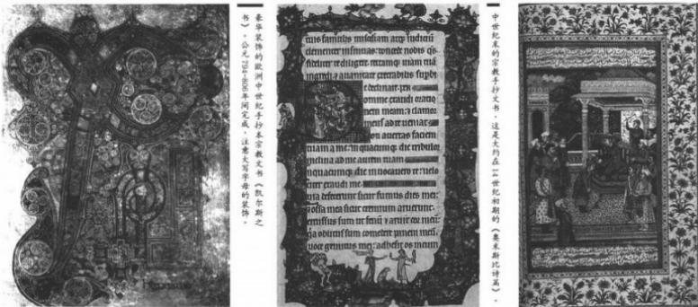
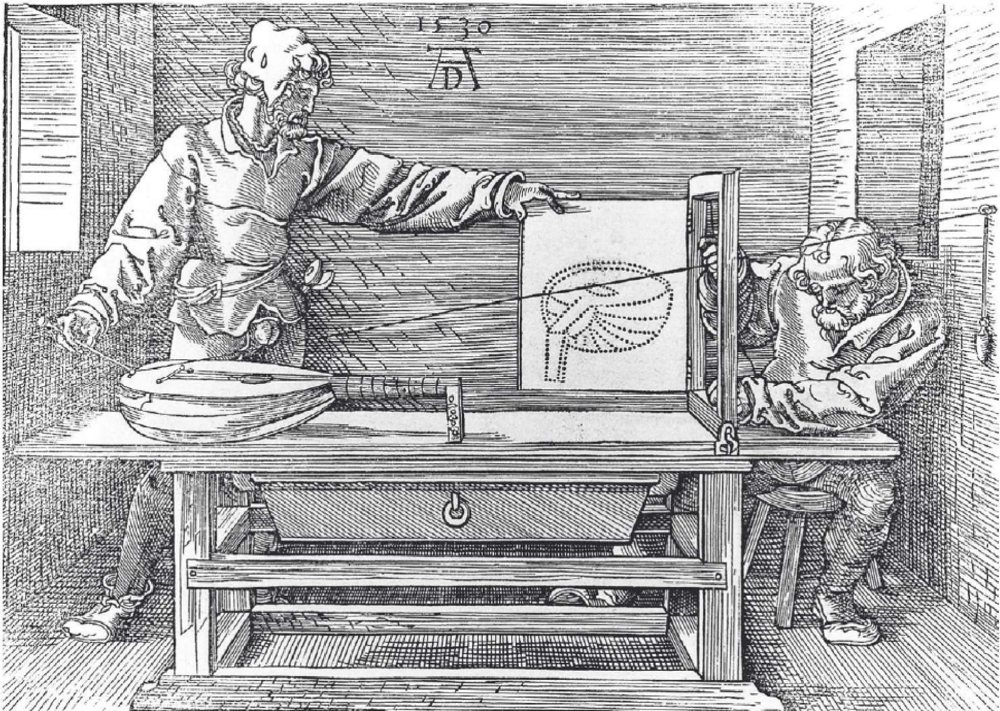
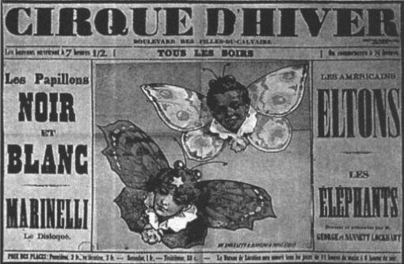
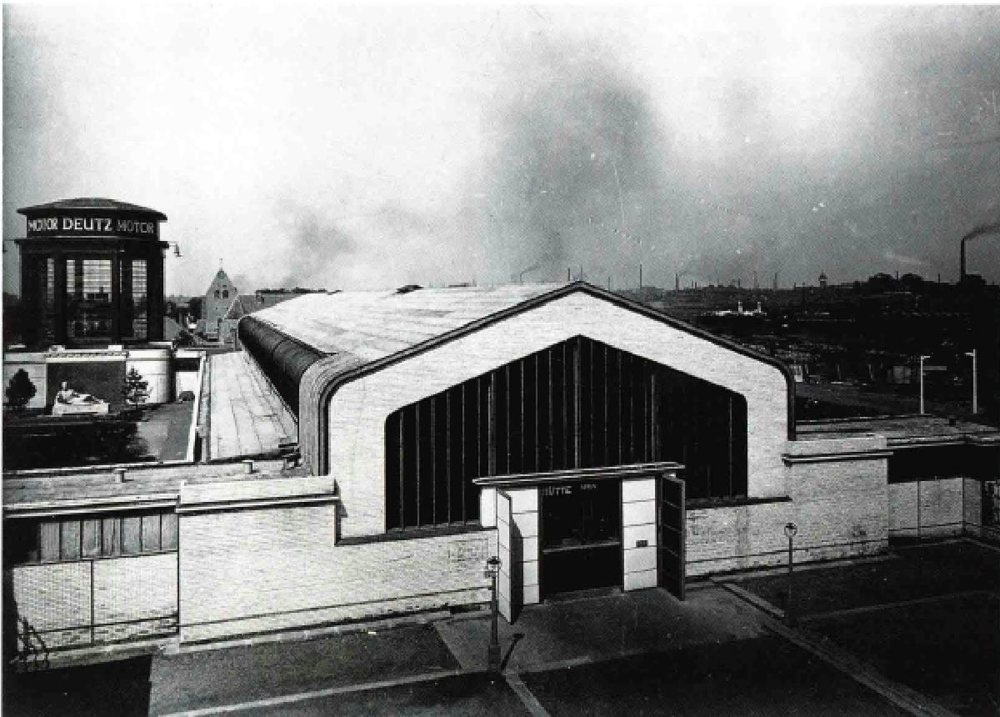
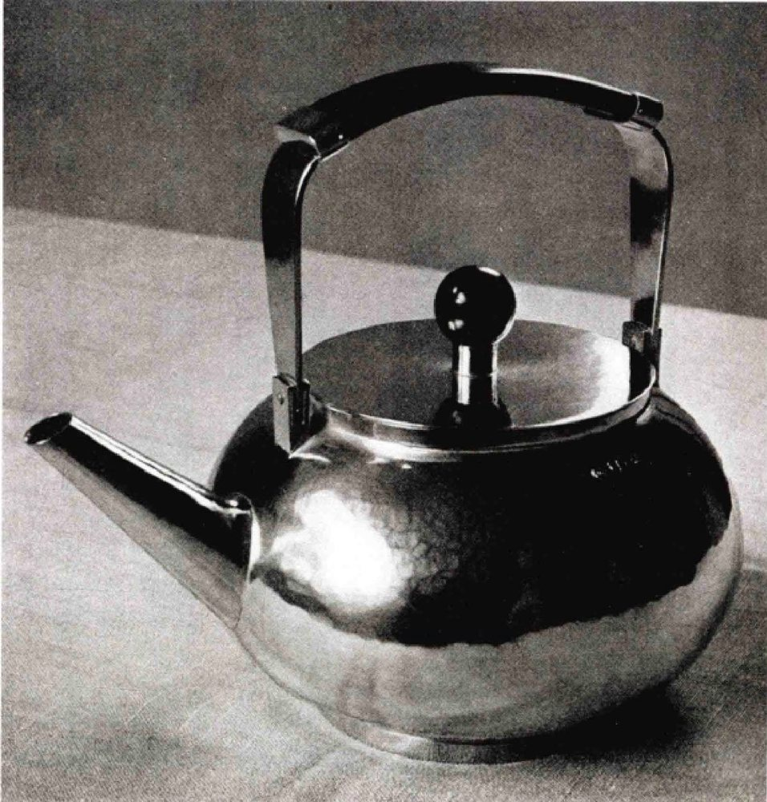
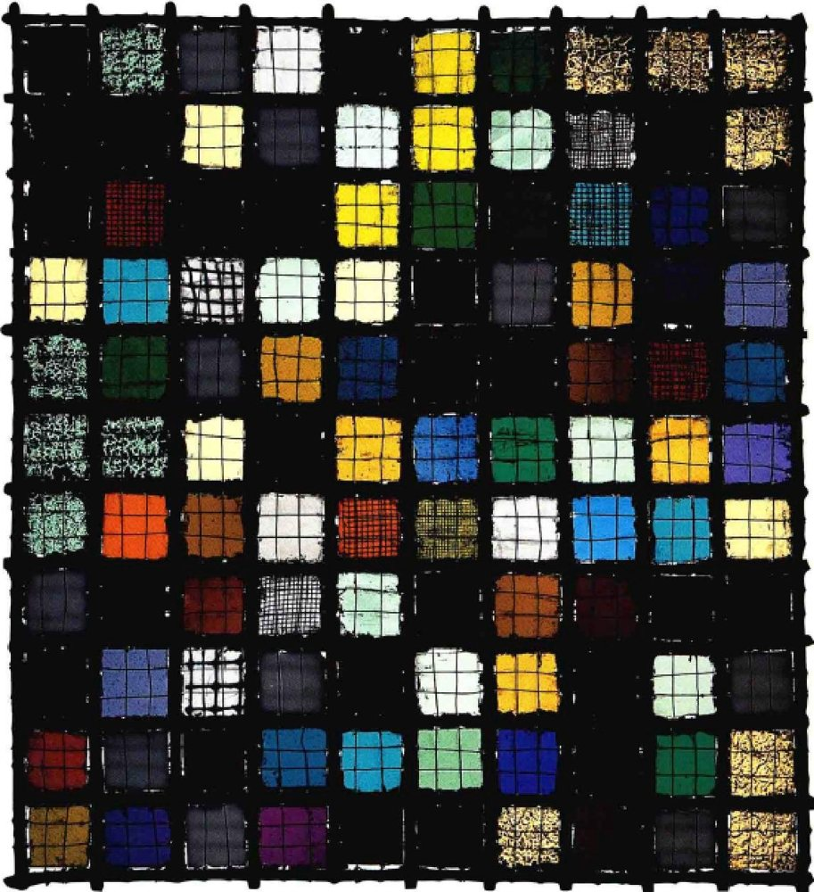
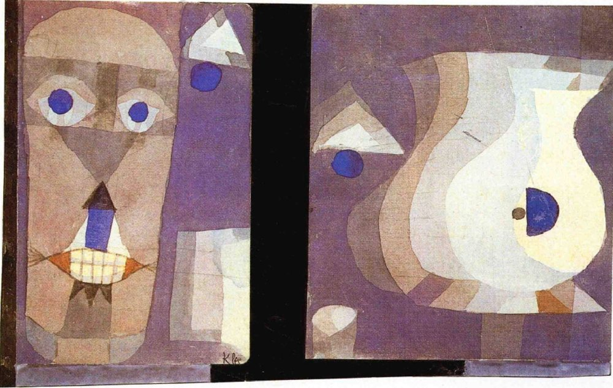
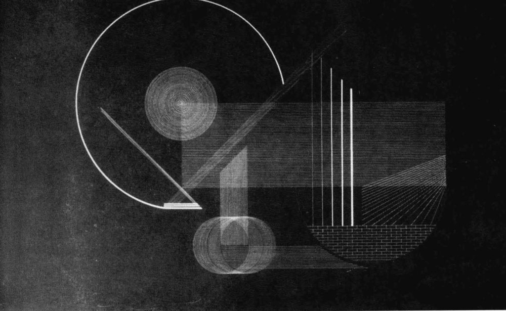
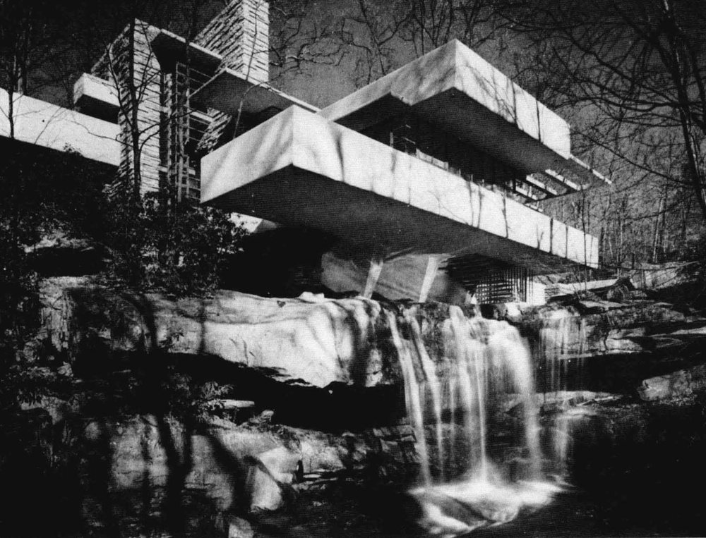
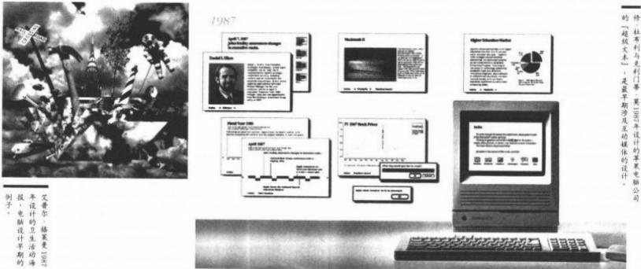
5. Source Bookshelf
Suggested reading order: Wang Shouzhi, 《世界平面設計史》 (build the backbone) → 《包浩斯理想：過去與現在》 (short and clear) → Fiedler, 《包浩斯》 (in depth) → 《藝術的真相》 (art history methods) → Eco, 《美的歷史》 (how standards of taste change) → 《中國現代設計與包浩斯》 (local context).
Show 23 titles
- [097]藝術簡史 - [102]世界平面設計史 - [144]醜的歷史 - [145]美的歷史 - [153]世界當代藝術史 - [154]世界現代設計史 - [197]中國現代設計與包豪斯 - [222]包豪斯道路：歷史、遺澤、世界與中國 - [259]包豪斯 - [260]運動中的視覺：新包豪斯的基礎 - [261]包豪斯：大師和學生們 - [264]包豪斯藏品精選集 - [265]包豪斯理想：過去與現在 - 世界現代設計史 - 中國 - 外國 - 工業設計史（第四版） - 現代設計百科全書：平面設計的歷史、語言及經典應用 - 藝術的真相：通往藝術之路 - 藝術與物理學：時空和光的藝術觀與物理觀 - 設計藝術史 - 重要的不是藝術 - 錢君匋的藝術世界6. Study Cues
- In one sentence, explain how the attitudes of the Arts and Crafts movement and the Bauhaus to "machine production" differ.
- What was the approach of each of the three Bauhaus directors? Why did the school exist for only 14 years?
- Choose a contemporary poster you like and place it on the movement map in 2.2: which movement's principles does it borrow?
- Constructivism and the International Style both use sans-serif type and geometric composition. How do their aims differ?
- Eco argues that standards of beauty change over time. Give an example of a design that was "considered ugly then and beautiful later".
- Make a timeline for a Hong Kong designer (for example Kan Tai-keung or Wucius Wong), marking the influences on them and the later designers they influenced.
7. Each Book
Each book in the bookshelf is described below. Every title above links to its section.
藝術簡史
Original title: Art: A Brief History, 4th edition
Scope. This is the Chinese translation of the fourth edition of Pearson's 《藝術簡史》. Through artworks and boxed features, it takes art from ancient West Asia, Egypt, the Indus Valley, Greece and Rome through Early Christian, Islamic, medieval book art and Gothic, and on to modern art. This edition adds new excavations and research chapter by chapter. Use it first to draw a timeline of global art, then move on to specialist design histories.
Main ideas
- Ancient West Asia has its own chapter, running from the Sumerians of Mesopotamia to Persia and setting art against the rise and fall of dynasties. The Stele of Naram-Sin stands for a new way of reading; a box on "art as the spoils of war" shows how modern conflicts such as the Iraq War have moved antiquities once again.
- The Egypt chapter strengthens its coverage of Old Kingdom architecture. It uses the portraits and mortuary temple of Hatshepsut to discuss royal imagery, the tomb of Ramose to show the sharp change after Akhenaten's reign, and the Faiyum mummy portraits to connect to the Roman period. The human figures of Harappa in the Indus Valley are placed on a map of river cultures alongside Africa and West Asia.
- Greece extends into the Hellenistic period: it opens with Exekias to show narrative in painting, places temple design alongside the orders of columns, and makes the colour of sculpture a new research topic. The Rome chapter starts with the Etruscans and goes on to the Ara Pacis, funerary portraits, idealised and realistic portraits, the Basilica Ulpia and the Arch of Constantine.
- Early Christian and Byzantine architecture is told apart by longitudinal and central plans, and the chapter moves from Byzantine iconoclasm to modern image destruction. The Islamic chapter puts the plan of each mosque beside the building, introduces Persian manuscripts through Bihzad, and ends with Hassan Fathy's modern Egyptian mosque.
- Medieval books run from the Chi-Rho page of the 《凱爾經》, Carolingian Gospels and the Spanish Beatus manuscripts to the Gero Crucifix and Ottonian sculpture, with separate boxes on the Bayeux Embroidery and Hildegard of Bingen. Gothic centres on stained glass, and gives the narratives in Ambrogio Lorenzetti's 《好政府在城市的作用》 and Duccio's 《聖像》.
Methods
- At each stop on your timeline, record only three things: the region, one work, and the question it answers (the change of dynasties, funeral rites, whether images may survive).
- Turn the boxed features into separate short notes: the spoils of war, how churches are named, the destruction of images. These notes can go straight into writing on design ethics.
- When writing the rationale for a spatial design, borrow the book's plan types: longitudinal or central, and mosque plans set beside the building, to show how ritual determines form.
- Use the claim in the modern chapters that "innovation means being modern" to mark the turning point of the nineteenth and twentieth centuries, then link to the design histories that follow.
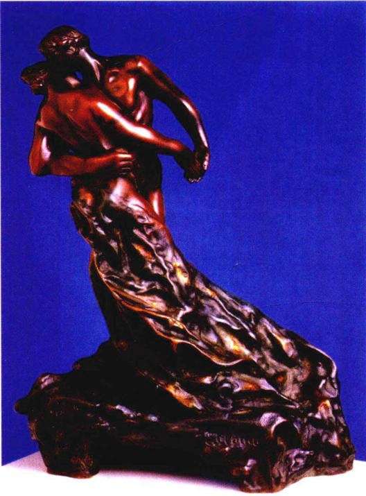
Study cues
- The Stele of Naram-Sin and the "spoils of war" box each want you to remember a kind of movement of artworks. Which kinds?
- How are Early Christian buildings distinguished by longitudinal and central plans? Why does the Islamic chapter put the plan of each mosque beside the building?
世界平面設計史
Author: Wang Shouzhi
Scope. Wang Shouzhi writes a history of graphic design that is bound up with printing: alphabets and manuscripts, Gutenberg's movable type, page layouts from the Renaissance to the eighteenth century, then what he calls the hundred-plus years of modern graphic design, reaching as far as multimedia. Its scope is two-dimensional visual communication, including books, packaging, advertising, logos, corporate identity, type and layout.
Main ideas
- The term "graphic design" was first used by William Addison Dwiggins in 1922. It only became an international standard term after the Second World War, and especially after 1970. Before that, both China and the West mostly spoke of "decoration" or the decorative arts.
- The real job of graphic design is to marshal graphics, type, text, illustration, colour and logos to achieve accurate visual communication; making things pretty comes second. The work is mostly things that can be printed in quantity: printing is the stage, and the elements are the actors.
- The line between modern and traditional is mechanised mass printing. In Europe its beginnings lie in Gutenberg's metal movable type in the fifteenth century. Unprinted combinations can also be graphic design, but the main thread of this book is still modern printing.
- The early chapters follow technology and region: alphabets, Celtic books, the Carolingian revival, late medieval religious reading, early German illustration, the Italian and French Renaissance, Basel and Lyon, page layouts of the seventeenth and eighteenth centuries, and French Rococo books.
- Because it is so closely tied to text and mass printing, graphic design is easily shaped by ideology, and its rise and fall can be read as social history in miniature. In the twenty-first century it has moved into multimedia, while books, packaging, advertising, logos and layout all remain part of it.
Methods
- Give your timeline two columns: technology (handwriting, movable type, lithography, photography, computers) and client (church, court, commerce, politics). Write the names of styles beside the technology.
- When you analyse a poster, first write the one sentence it is trying to communicate, then mark which part the type, image and colour each carry.
- If your design rationale uses the term "graphic design", note Dwiggins's 1922 and its general adoption after 1970, and explain how it differs from the work meant by "decoration".
- Record the posters of the 1920s by commission: music and theatre in Vienna, the London Underground, and where forms such as Constructivism entered commercial printing.
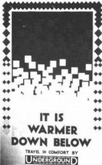
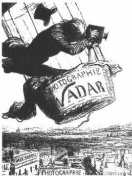
Study cues
- Dwiggins used "graphic design" in 1922. In which decade did the term become an international standard? What did people call it before that?
- Choose a poster you have made and write one comment on it for "communicating one sentence" and one for "making it pretty comes second".
醜的歷史
Author: Umberto Eco
Scope. Umberto Eco has edited a history of ideas: how each age has defined ugliness. It runs from moral ugliness and mythical monsters in the classical world to images of death, portraits of power, and the frightening as seen across cultures and even from the viewpoint of science fiction. It is a pair with 《美的歷史》 and shows that disgust also has a history.
Main ideas
- There is no universal rule for beauty and ugliness. Europeans looking at other peoples' idols and music, and those peoples looking at European sculpture and painting, could each find the other ugly. Judgements often come from social or political standards.
- Marx wrote about how money cancels out the effects of ugliness; power does the same. A ruler's flaws could be rewritten by the painter's brush in a portrait, and subjects still looked up in admiration.
- Fredric Brown's short story "Sentry" turns the normal upside down: the "monster" the narrator fears is a human being, with two legs, white skin and no scales. Change the viewpoint, and the acceptable and the frightening swap places.
- Throughout history, people have still defined beauty and ugliness by a model. Nietzsche said that people take their own type as the standard of perfection, so ageing, paralysis and corpses provoke "ugliness". Plato believed a pot made according to the rules could be beautiful; Aquinas linked beauty to proportion, brightness and virtue, so whatever did not fit the form proper to a thing was ugly.
- The classical chapter moves from the ugliness of Thersites, Aesop and Socrates to the terrifying figures of Greek myth: the Harpies, Scylla, Polyphemus and Cerberus. Later images of death became warnings to the faithful and entered drama and carnival floats.
Methods
- For every "ugly" on your timeline, write who defined it: whose standard, serving which belief or power.
- If your design rationale sets out to break a kind of "good-looking", borrow a historical precedent first, and state whether the ugliness of the time was moral, physical or a matter of viewpoint.
- When looking at a portrait, write two sentences: one on the face in the picture, and one on how the patron's power rewrites the viewer's judgement.
- Read the same work alongside 《美的歷史》 and give three words each for why it is beautiful and why it is ugly.
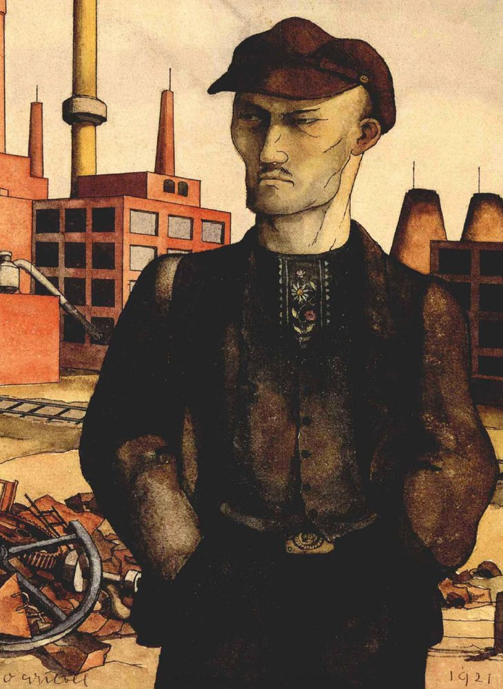
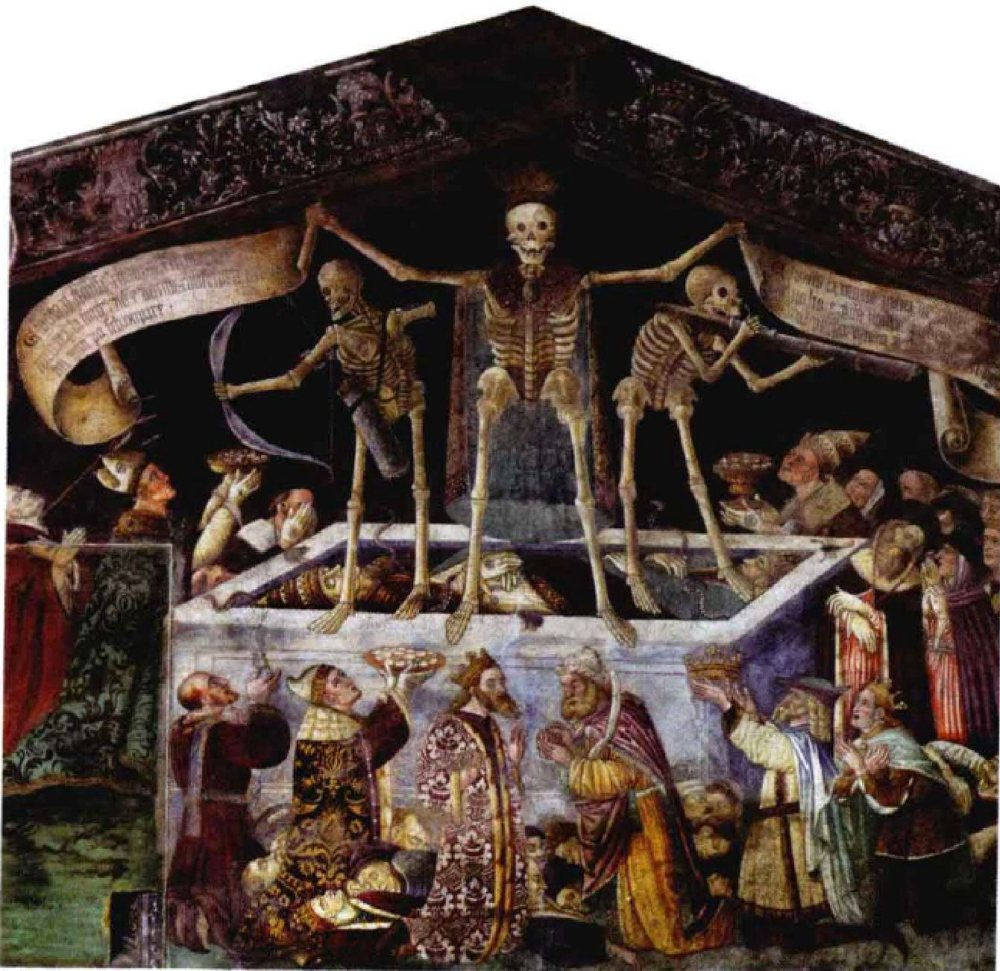
Study cues
- How does Brown's "Sentry" reverse "who is the monster"? What does this add to the claim that "ugliness changes with culture"?
- What standard does Aquinas use for ugliness, and what standard does Nietzsche use?
美的歷史
Author: Umberto Eco
Scope. Eco asks which cultures and which periods have recognised a pleasure of contemplation that is separate from the desire to possess. His material comes mainly from Western art, because craftspeople rarely left written explanations of why they found something beautiful; nearer to the present he also uses film, television and advertising. The book itself explains that it is a history of the idea of beauty, a different way of reading from art history.
Main ideas
- The sense of beauty is separate from desire. A thirsty person drinks water first, and only afterwards might contemplate the spring; you can find a person beautiful with no possibility of possessing them. Wanting to own a painting to show off, to look at every day, or for its price is another matter.
- The relationship between beauty and art is unstable. Some periods believed beauty lay in nature, so moonlight, fruit and colours all counted; "art" meant making things well and fit for use, and painters, shipbuilders, carpenters and barbers could all be said to practise an art. Only later were painting, sculpture and architecture separated from the crafts.
- The book concentrates on the West. Other cultures have plenty of poetry and philosophy, but it is hard to be sure that their words, once translated as "beautiful" or "good", mean the same thing; and works such as masks lack technical texts explaining whether they were for contemplation, funerals or everyday use.
- For this book, great works and commercial images have the same value: both are evidence of an age's ideal of beauty. St Bernard condemned the monsters on Romanesque capitals, yet his words prove that the faithful of his time were spellbound by them, so in his testimony those carvings are still beautiful.
- Close to the present, Gaudí's architecture is described as a revolt against the cold beauty of the machine; after that, everyday objects enter the world of criticism, commercialisation and mass production.
Methods
- When you describe something "good-looking", write two sentences: what you gain from contemplating it, and what you gain from owning it. Use the first sentence in your design rationale.
- On your timeline, separate the periods when "beauty is in nature and art is in usefulness" from those when "beauty is mainly in art".
- Set an advertisement or film still beside an old painting, and for each write what its age allowed to count as beautiful.
- Use the page on Gaudí to discuss whether "not fitting the machine's use" can become a value, then decide which kind of usefulness your own product should aim for.
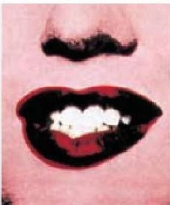
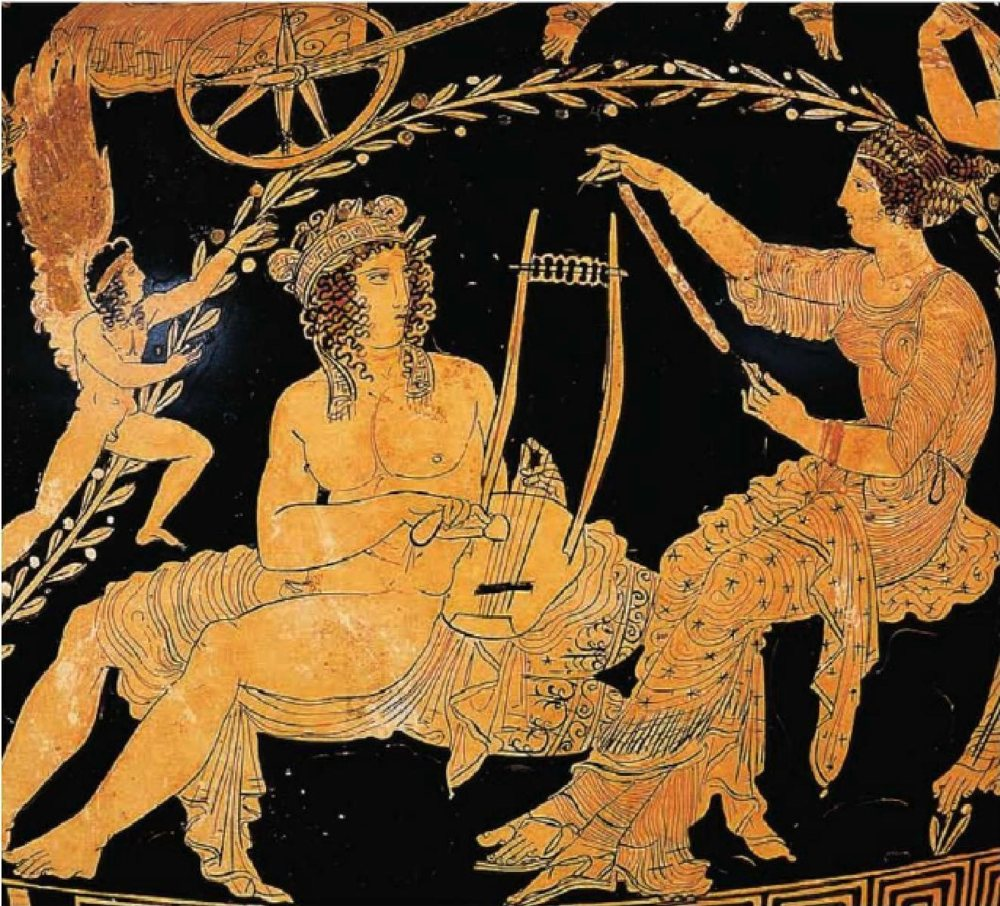
Study cues
- Use the example of "the thirsty person and the spring" to explain how the sense of beauty and desire are separated in time.
- St Bernard did not approve of the monsters on the capitals. Why does Eco still use his words to prove that those carvings were beautiful?
世界當代藝術史
Author: Wang Shouzhi
Scope. Wang Shouzhi fills the gap after the 1960s. H. H. Arnason's 《西方現代藝術史》 runs to about the early 1970s; this book starts after the decline of Pop and covers Neo-Pop, contemporary abstraction, Minimalism, Conceptual art, Neo-Expressionism, New Realism and postmodernism, then has chapters on Britain, New York, the rest of the United States, Latin America, Japan and Korea. It was revised from a series that ran in 《藝術家》 magazine from 1999.
Main ideas
- After 1960 there were many exhibitions, including the Venice Biennale and documenta in Kassel, but few systematic accounts. Designers who know only their own design culture will not understand the art that shapes culture as a whole.
- The Neo-Pop chapter covers the movement's background and nature, the veterans who returned, and Keith Haring and graffiti. The later chapters separate Minimalism, Conceptual art, Neo-Expressionism, New Realism and postmodernism, each with its current state of development.
- The regional chapters open up the map beyond New York: British painting and sculpture are treated separately, and Latin America, Japan and Korea each have a chapter. From the mid-1980s, some movements became international because American and European artists joined them.
- In the revision, the chapters on mainland China and Russia were removed, and the Chinese spelling of "Pop" was standardised. The preface still discusses how overseas Chinese artists brought their own culture into contemporary methods, with examples including the text works of Gu Wenda and Xu Bing, and Cai Guo-Qiang's 《草船借箭》 and explosion projects.
- The direct reason for writing the book was that the lines of influence between contemporary art and architecture, products, graphics and fashion were still unclear.
Methods
- Start your timeline at 1960. In each box, write the movement's name, one artist, and one point where it touches design (posters, installations, product appearance or space).
- When analysing a work, write about the art system of the city or country first, then the individual. Use one chapter of the book each for Britain, New York, Latin America, and Japan and Korea.
- If your design rationale mentions "postmodern" or "conceptual", take a definition from the relevant chapter and note the approximate dates.
- Use the artists in the preface to practise the question "how does a cultural resource enter contemporary experimental methods?"
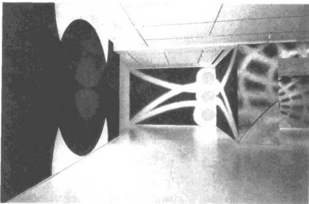
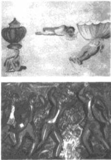
Study cues
- From which year does this book start? Which gap in Arnason's history of modern art does it fill?
- Neo-Pop, Minimalism, Conceptual art and Neo-Expressionism are separate chapters in the contents. Choose two and, in one sentence each, say how the questions they care about differ.
世界現代設計史
Author: Wang Shouzhi
Scope. This is an earlier edition of Wang Shouzhi's 《世界現代設計史》. The contents run from the rise of modernism and the Bauhaus, through two chapters on world modern design, to what came after modernism. The book is packed with Western-language bibliographies, so it is good for building a framework from the 1900s to the 1970s and for following each chapter back to its original sources. For the later revised edition, see the other entry of the same name in this section.
Main ideas
- The rise of modernism has its own chapter. After Arts and Crafts, a wider and more experimental Art Nouveau movement appeared on the European continent.
- In the discussion of house design, one passage describes how, once experience and style had matured, design turned into personal exploration, and following fashion was no longer everything.
- The bibliography for the Bauhaus chapter includes exhibition catalogues by Gropius and others, archival studies by Frank Whitford and Magdalena Droste, and monographs on Marcel Breuer, so you can trace 1919–1933 back to the original exhibitions.
- The bibliography on industrial design places Raymond Loewy, Walter Dorwin Teague, American design ethics, Italy's "New Domestic Landscape", Scandinavia and Sigfried Giedion's work on mechanisation in the same period, so post-war modern design splits into several lines of production.
- Later bibliographies move into 1960s fashion, Ettore Sottsass, Finnish design, environmental psychology and human factors engineering. The last chapter covers what came after modernism, so your timeline needs to run past the closure of the Bauhaus.
Methods
- For each chapter, copy out three references first. Whichever one you can find becomes your further reading, and the chapter title should have a source beside it.
- Follow the chapter order on your timeline: the rise, the Bauhaus, modern design by country, after modernism. This edition still keeps products, architecture and graphics in one general history.
- Cite separately in your design rationale: human factors and environmental psychology support "the user", while the Loewy and Teague references support American commercial design.
- Divide the work with the later revised edition: use this edition for the background on architecture and graphics and for the Western-language references, and the revised edition for twenty-first-century product design.
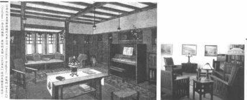
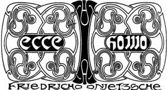
Study cues
- In this edition's chapter order, which two sections does the Bauhaus sit between? Why should the timeline run to "after modernism"?
- From the bibliographies, give one reference representing American commercial design and one representing human factors engineering. How do the design questions they answer differ?
中國現代設計與包豪斯
Scope. This book sets modern Chinese design against the Bauhaus, then reconstructs the school through its objects and teaching disputes. The visible main thread runs from the cover of the 1919 manifesto, Itten's preliminary course and material studies, to the dispute over direction sparked by the Jena theatre, and then the lamps, teapots, chairs, school buildings and wallpaper that followed the 1923 slogan "Art and Technology — A New Unity".
Main ideas
- Gropius used the word "building" (Bau) and avoided "architecture", because the latter was tied to the historicist forms of the academies. Building meant creating a new world through design and modernising everyday life.
- Everyone had to take Itten's preliminary course. Its principles were written as three pairs: intuition and method, subjective and objective, experience and understanding. A material study was usually limited to about a week, and its aim was to understand the qualities and contradictions of each material; putting together a wooden board, paraffin wax and a rusty saw was research, an exercise rather than a work of art.
- After passing the preliminary course, students entered workshops by material: wood, ceramics, metal, textiles. A master of form and a technical master taught together, with discussion in the morning and practical work in the afternoon. The aim was to train designers who could make modern everyday goods and who were craftspeople at the same time.
- The commission for the Jena municipal theatre sparked a conflict between Gropius and Itten: were the workshop groups only for education, or for developing prototypes for mass production? Itten refused to cooperate and left. Because there were not enough machines or money, the 800 seats were subcontracted to a specialist theatre-seating factory.
- Oskar Schlemmer's 1922 emblem became the trademark. The 1923 slogan "Art and Technology — A New Unity" was used to attract the press and consumers; at the same time, Gropius wanted raising customers' taste to be seen as a form of education.
Methods
- Use only the years of objects on your timeline: 1919 manifesto, 1921 material studies, 1922 emblem, 1923 Haus am Horn and slogan, 1924 teapot and Wassily Chair, 1926 school building. Note for each whether it was a one-off study or prepared for mass production.
- If your design rationale mentions "the unity of art and technology", also mention the Jena theatre seats: without machines, the unity stayed outside the commission. Your proposal should state who is responsible for production.
- Model your foundation exercises on the material studies: one natural material, one ready-made object, about a week, then one paragraph on the contradictions of the material.
- When reading about "China and the Bauhaus", check Chinese courses against three things: the preliminary course, the dual masters, and prototypes.
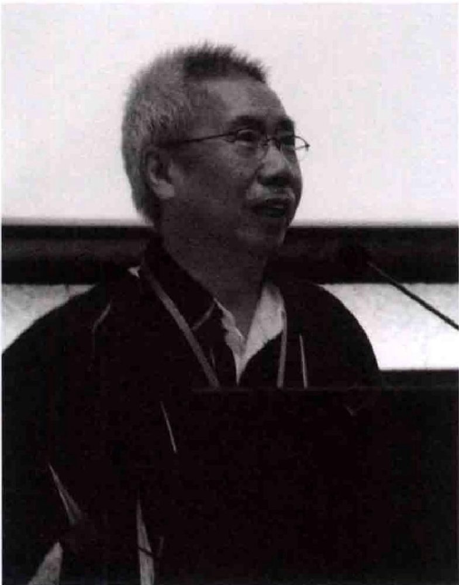
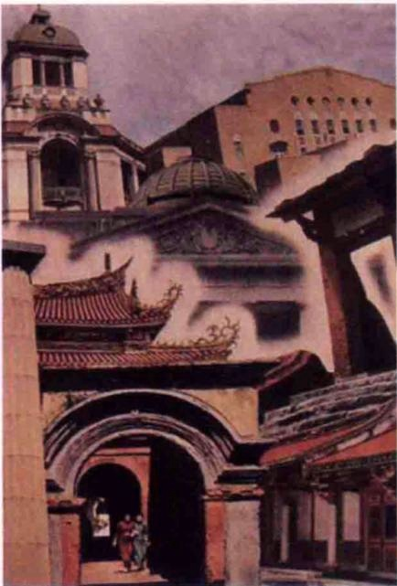
Study cues
- Which three pairs of words sum up Itten's preliminary course? Why are the material exercises described as research?
- Where were the 800 seats for the Jena theatre finally made? What limit did this place on "Art and Technology — A New Unity"?
包豪斯道路：歷史、遺澤、世界與中國
Scope. This is one volume in the China Academy of Art's "Bauhaus and Chinese Design Studies" series. Xu Jiang's general preface asks what the Bauhaus brought; the main text runs from William Morris, the Deutscher Werkbund, Peter Behrens and Henry van de Velde to Weimar, Dessau and Berlin. The later part reaches the architecture of Bauhaus figures in the United States and the traces left in Chinese design education.
Main ideas
- Xu Jiang gathers the legacy into a few strands: a design culture aimed at the public, the plain beauty of material and structure, the machine aesthetic advanced by "less is more", and the popular orientation of industrial design. He uses the thin, light, tactile sensibility of everyday goods to show that this thinking still lives in bodily experience.
- The educational legacy is an open mind combined with training of the hand. Working with real materials in the workshop develops the unity of mind and hand. The Basel drawing method once popular in China is traced back to Itten's preliminary course.
- In 1945, Gropius spoke in Chicago about "rebuilding communities": architecture is linked to society, politics and education, and improving a city starts with neighbourhood community centres.
- The school's history is told by its three sites: Weimar 1919–1925, Dessau 1925–1932, Berlin 1932–1933, with a comparison of two school emblems. A chapter on the years before the school's founding shows that the Bauhaus had an intellectual lineage.
- Images of the legacy include Saarinen's office's General Motors Technical Center (Michigan, 1948–1965) and, on the Chinese side, documents about Zheng Ke and the 1982 graduation projects in fashion at the Central Academy of Arts and Crafts.
Methods
- Give your timeline three background bands: the Werkbund and Behrens before the founding, the school's fourteen years, and the United States and China after 1945. Place works in the matching band.
- When writing "less is more", note that this is how the general preface uses it to describe the legacy, then go back to specific products or works by Mies.
- A rationale for public design can use the "neighbourhood" from the 1945 Chicago speech as historical support, stating clearly which community the users are.
- The two school emblems can become a logo exercise: what identity did the same institution need in Weimar and in Dessau?
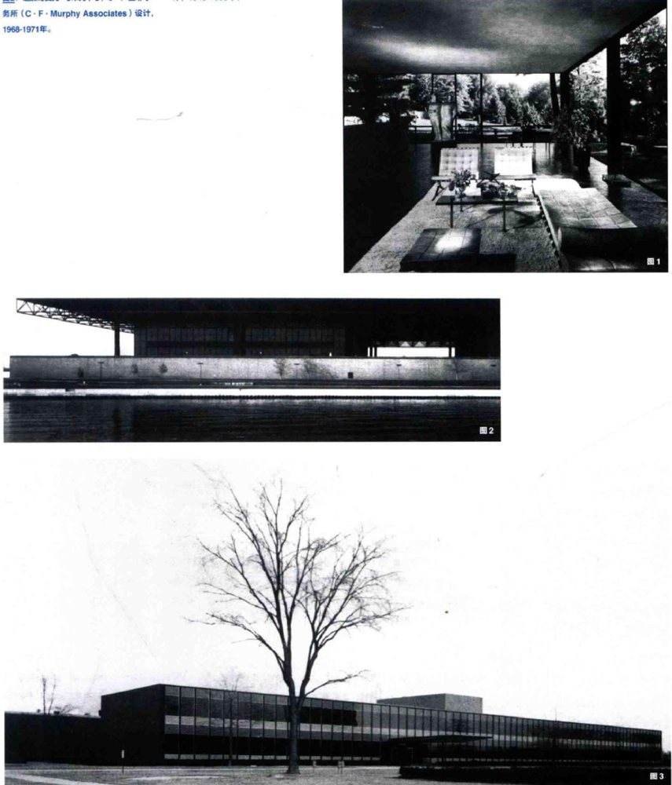
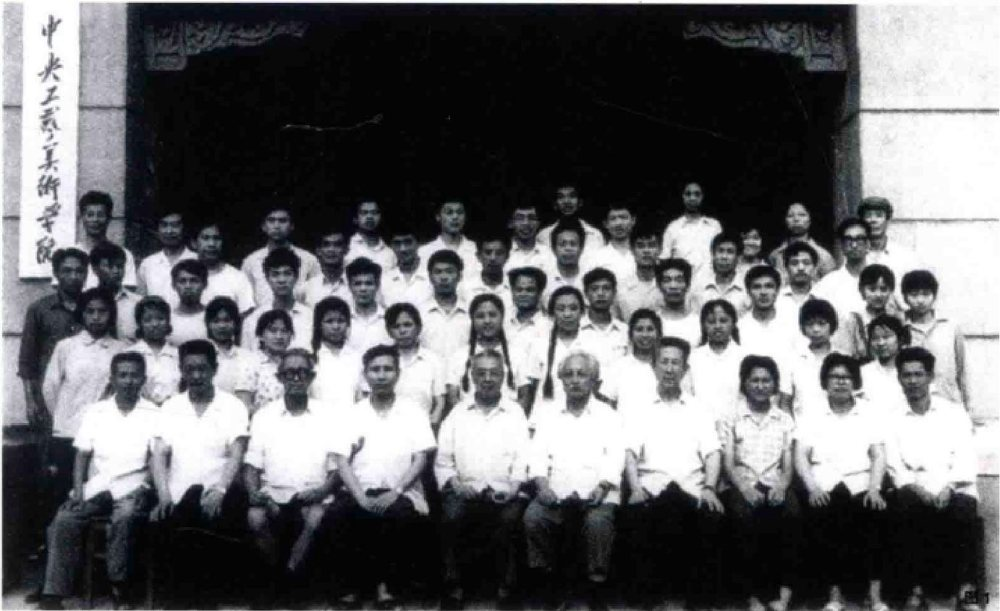
Study cues
- Write out the Weimar, Dessau and Berlin periods with their years. Which four sources does the contents place before the founding of the school?
- What does Xu Jiang's educational legacy, and what does the 1945 "rebuilding communities" speech, each ask design students to learn?
包豪斯
Scope. This is a large illustrated volume organised by theme; the school's history is only one thread in it. The contents are divided into foundation and influence, people, the preliminary course, the workshops, everyday life, and theory. It runs from the Weimar Republic, the Nazis and the two Germanys to Black Mountain College, the New Bauhaus in Chicago and Ulm. The people section is arranged around the three directors and the individual masters. Use it once you already have the dates in order and want to follow one question in depth.
Main ideas
- The history of influence goes beyond 1933: modernism under the Nazis, East Germany torn between formalism and pragmatism, how West Germany inherited the Weimar legacy, and Black Mountain College, the Chicago Institute of Design and the Ulm School of Design.
- The three directors are reviewed separately: Walter Gropius; Hannes Meyer and his path towards collective production; Mies van der Rohe in Dessau, Berlin and Chicago. The masters include Johannes Itten, László Moholy-Nagy, Josef Albers, Paul Klee, Wassily Kandinsky, Oskar Schlemmer, Marcel Breuer, Herbert Bayer and Gunta Stölzl.
- The preliminary course section sets several teaching methods side by side: Itten's humanist education, Moholy-Nagy's perception, Albers's creativity, the teaching of Kandinsky and Klee, and colour teaching. After watching Itten, Klee noted down the practice of sketching with both hands to harmonise movement.
- The workshop chapters bring cabinetmaking, metal and tubular-steel furniture, ceramics, wallpaper, weaving, printing and advertising, photography, theatre and architecture teaching down to the shop floor. Another chapter deals directly with the women of the Bauhaus and "the myth of emancipation".
- The later part of the book questions summing up the Bauhaus as a "style": many years of theory are now seen as ideology, while typography remains a legacy that can be discussed in concrete terms.
Methods
- First use a school history to fix the dates, then use this book's themed chapters to answer one question, for example: which design work carried on under the Nazis, what the women masters did, or which version of the course Chicago and Ulm each inherited.
- Copy one exercise brief from each of the four preliminary-course teachers, make four small exercises, and compare what "humanist" and "perception" ask students to look at.
- When your design rationale mentions a material or typeface, match it to the workshop chapters and write the master's name and the approximate year.
- Use the typography pages for one constraint exercise: describe only the grid, type weights and colours, and save your judgement until after the description.
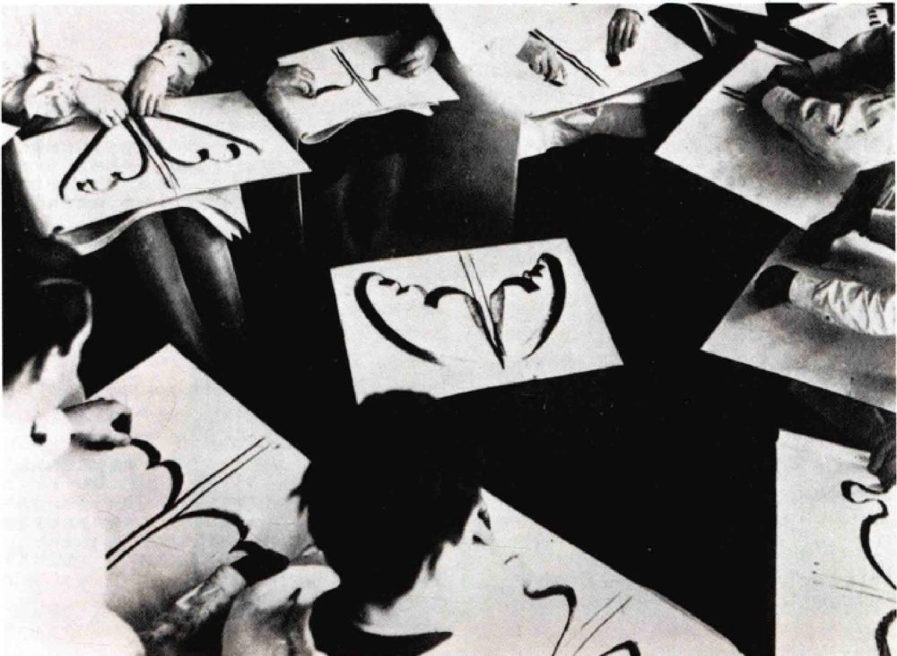
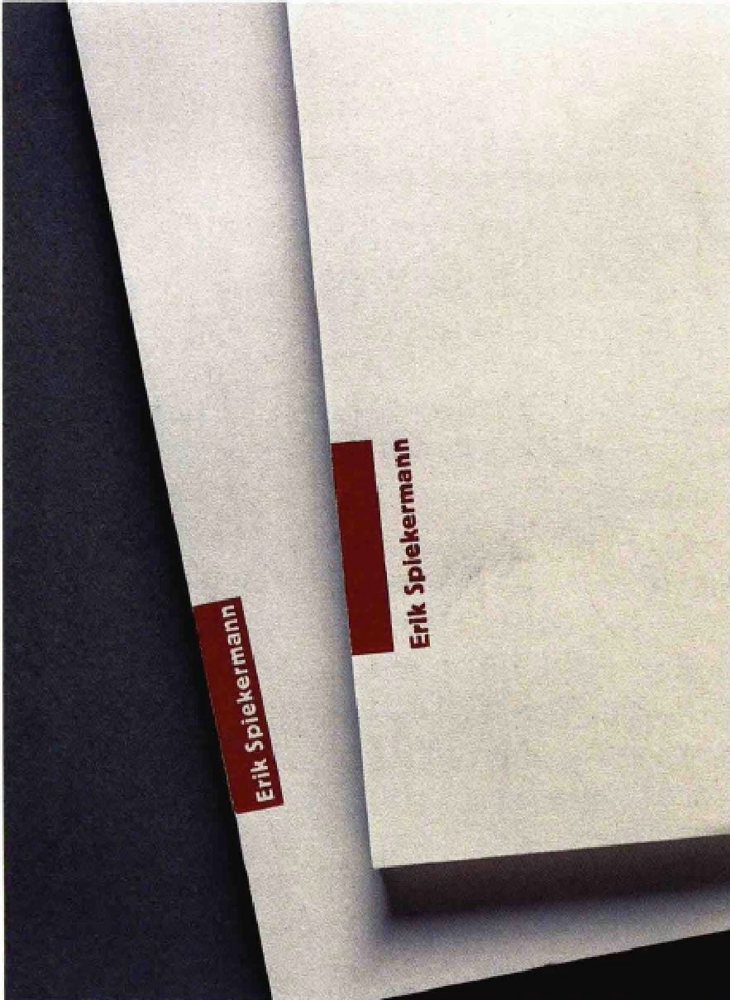
Study cues
- Which path is each of the three directors placed on? What does the title of Meyer's chapter emphasise?
- Which word does the book use to sum up the preliminary courses of Itten, Moholy-Nagy and Albers? Why is typography treated as a legacy that is easier to discuss than "style"?
運動中的視覺：新包豪斯的基礎
Original title: Vision in Motion
Author: László Moholy-Nagy
Scope. This is the teaching book Moholy-Nagy wrote late in life. It records his work in the Bauhaus metal workshop and preliminary course, and as director in Chicago of the New Bauhaus, the School of Design and the Institute of Design. It is structured as an analysis of the present situation, new methods of designing for life, a new organic education (art, photography, sculpture, space-time, film, literature), and finally a return to "vision in motion".
Main ideas
- The introduction reduces his beliefs to three: artists take part in social change through material practice; art is practised beyond the aesthetic realm; form and image can be built on understanding that people share.
- His career runs from Hungary and the Weimar Republic, through exile, to the Institute of Design in Chicago. Unlike William Morris, who left behind a utopia of rural craft, he expressed his values through a cross-media life and teaching, and here the boundary between art and design is opened up.
- In his Berlin period he co-drafted "A Call for Elementarist Art", published in De Stijl: art is built on its own elements, and the spirit of innovation can be shared by everyone. At the Bauhaus in 1923–1928 and in Chicago in 1937–1946, this idea became the cornerstone of his teaching.
- Line exercises give the quality of a mark back to the tool. In Lyonel Feininger's 1923 woodcut, the character of the line comes from the gouge travelling across the surface of the hardwood.
- Space exercises ask students to see movement at the same time. Marie McRae's 1944 assignment includes a rotating object from 1943, and the front view, design drawing, perspective and section of a space modulator.
Methods
- On your timeline, place this book in Chicago after 1937, as the link to the Bauhaus preliminary course continuing in America.
- Do an element exercise: leave marks with only one tool on one material, and write three sentences on where the quality of the marks comes from.
- Hand in four drawings for the space assignment: front view, design drawing, perspective and section. Only the four together make up the kind of seeing the book describes.
- If your design rationale says "designing for life", pick one of the three beliefs and write how the object lets people share an understanding.
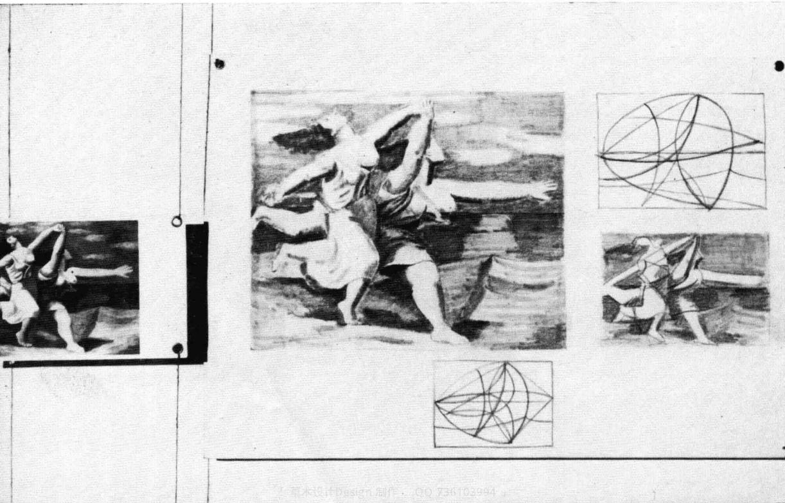
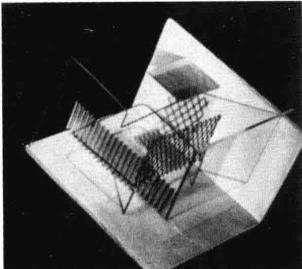
Study cues
- In which magazine was "A Call for Elementarist Art" published? How does it define this kind of art?
- Feininger's woodcut and McRae's space modulator each ask students to understand which way of drawing "marks" and "space"?
包豪斯：大師和學生們
Original title: The Bauhaus: Masters & Students by Themselves
Scope. This is a selection of documents. Its prehistory begins with the crisis in education caused by the split between fine art and craft, and it includes Morris's writing from 1896, Henry van de Velde's recollections, Gropius's letters from 1919, and manifestos, curricula and accounts by teachers and students from the Weimar years. Use it alongside the general histories to check who wrote which sentence in which year.
Main ideas
- After the Renaissance, academies separated fine art from craft and ranked fine art higher. Gottfried Semper and others thought this barrier was harmful. From 1852 the museum and design school at South Kensington in London had students copy items in the collection before designing, but the school was still later seen as a side branch of the art academy.
- The practical reason for reform was that the quality of industrial products depended on design: good design sold better and was cheaper to make. Designers needed to understand materials and more economical production methods. New buildings such as railway stations used a lot of iron and glass, and many were built by engineers.
- Henry van de Velde saw engineers' buildings and new machine products as meeting the same standard: the form expresses the function, and value falls when the function is hidden under unnecessary ornament and made to pretend it is handmade. In 1902 he came to Weimar to run an arts and crafts seminar, and in 1907 he became director of the public school.
- In 1907 the German electrical company AEG appointed Peter Behrens: products, advertising, print and factory buildings were designed together, creating a unified house style and opening up the market. Before this he had been a painter and director of an art school in Düsseldorf.
- William Morris thought machine products pretending to be handmade were a fraud; John Ruskin thought the machine itself was evil. The 1919 manifesto and curriculum should be read after these two attitudes. The Grand-Ducal Saxon School of Arts and Crafts in Weimar was dissolved in 1915, and the Bauhaus was founded on 1 April 1919.
Methods
- Before you quote any principle, find its source in this book: a manifesto, a curriculum, or a later recollection. Mark recollections with the year they were written.
- Build the pre-founding timeline with four stops: Morris and Ruskin, South Kensington, van de Velde's school in Weimar, and Behrens at AEG.
- When your design rationale says "the form expresses the function", note that this comes from van de Velde's line of thinking, and write which kind of fake-handmade ornament you removed.
- Use the page on the mural workshop to practise colour: first write what space the colour should shape, then talk about paint. The book argues that this needs a systematic plan.
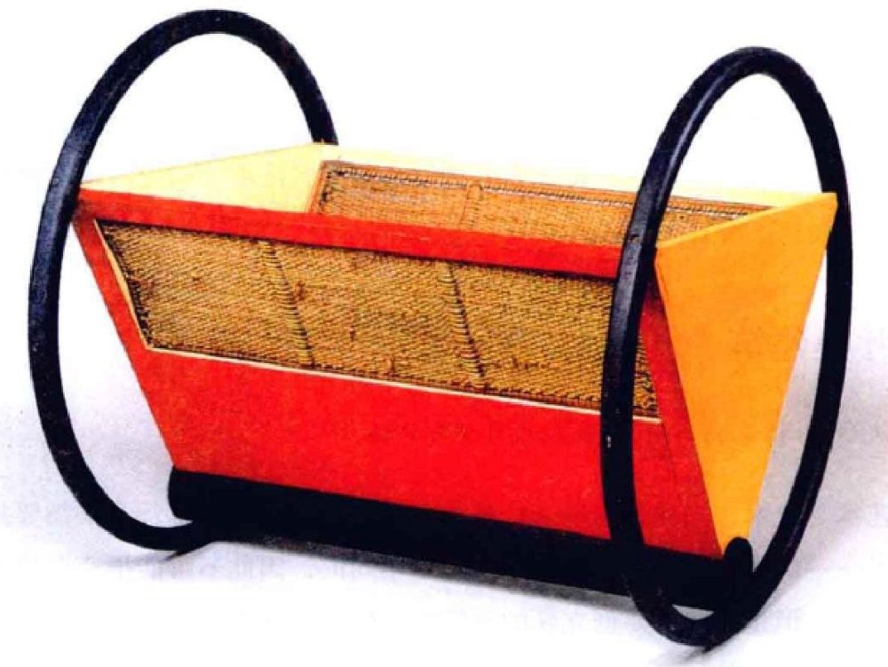
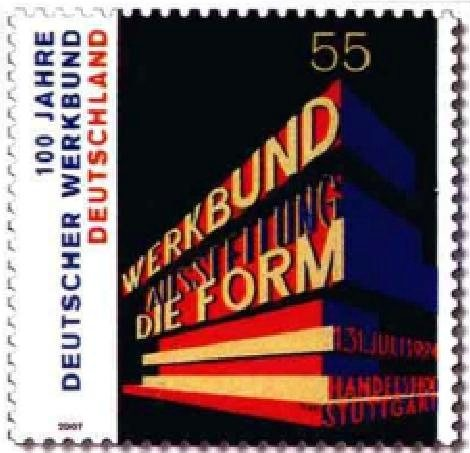
Study cues
- What did the South Kensington design school make students do first? Why was this copying later still seen as not enough?
- How did Morris and Ruskin judge the machine differently? Which question, coming after them, should the 1919 manifesto be read within?
包豪斯藏品精選集
Scope. This is a selection from the collection of the China Academy of Art Design Museum, arranged by directors, masters, teachers and students, and it includes the 1919 programme of the State Bauhaus in Weimar. The general preface explains that Hangzhou bought a large number of original international design works, including Bauhaus pieces, and then used exhibitions and this book series to bring both the objects and the ideas into the academy.
Main ideas
- In his manifesto of 20 March 1919, Gropius proposed a guild without class distinctions between craftsmen and artists, which would build a "cathedral of the future" combining architecture, sculpture and painting. Feininger's woodcut of a cathedral is placed at the museum entrance as the manifesto's image.
- The three directors are listed separately, so that items can be assigned to the terms of Gropius, Meyer or Mies. The programme pages list the aims, principles, scope of teaching and admission together.
- The collection includes costumes for characters in Oskar Schlemmer's 1926 《三合一芭蕾》. The same page lists words such as brass band music, circus, folk song and folk dance, so theatre and popular entertainment appear in the same field of view.
- The purchase itself is an act by a Chinese design institution: using original works and a book series to bring the Bauhaus into teaching, so that students can check the programme against the objects.
- Xu Jiang's question, "What exactly did the Bauhaus bring?", is answered in this book first of all through objects, catalogue numbers and the original text of the programme, all of which can be checked.
Methods
- Make a card for each item: maker, year, workshop, and its catalogue number in the book. Build your timeline only from the cards.
- When reading the programme, copy three phrases: no class distinctions between professions, the cathedral of the future, and the relationship between art and technology. Your group's studio rules can be rewritten from these three phrases.
- Use Schlemmer's 1926 costumes for a comparison: how costume makes the body visible on stage, and how the circus and folk songs next to it show which audience it addressed.
- When writing a rationale about Chinese design education, record the purchase of this collection as an institutional event, then write which original piece could change which course.
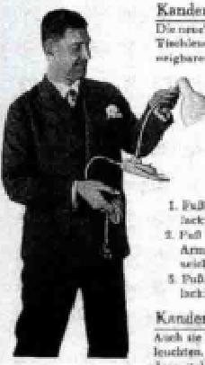
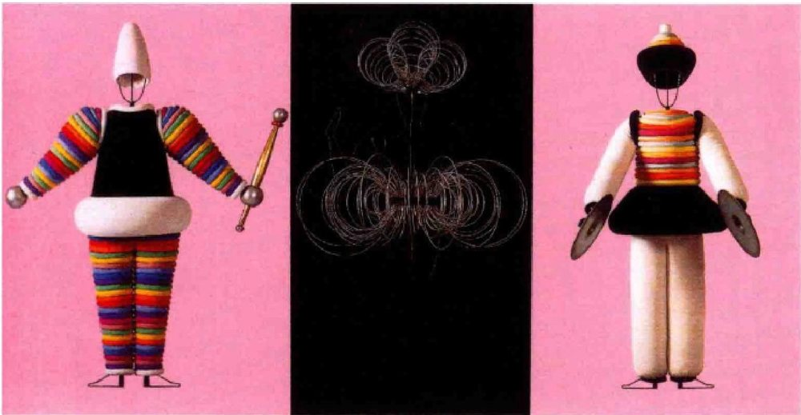
Study cues
- Which three arts does the "cathedral of the future" in the 1919 manifesto bring together? What does it say about the class distinction between craftsmen and artists?
- Who designed the 《三合一芭蕾》 costumes, and in which year? Which other types of performance are listed on the same page?
包豪斯理想：過去與現在
Original title: The Bauhaus Ideal Then & Now: An Illustrated Guide to Modernist Design
Scope. This is an illustrated guide organised as a series of questions. It runs from "What did the Bauhaus stand for?" through legacy, glass, function and social engineering, then uses Frank Gehry's Walt Disney Concert Hall and Jean Nouvel's Guthrie Theater to ask how the ideal can still hold once architecture moves away from the white box. The preface to the new edition was written in Berkeley in 2009.
Main ideas
- The book presents the Bauhaus as a German design school founded after the First World War, its name meaning a house under construction. Gropius wanted to break with the past in design and education, replacing Victorian style with a simplicity suited to the machine age. The results include white interiors, the chaise longue and the glass curtain wall; Le Corbusier is described as another starting point of the same movement.
- After the school closed in 1933, many of its teachers became influential in America, and the Museum of Modern Art in New York also holds related works. The book calls the teachers' shared aims and methods "the Bauhaus ideal" and treats this as the start of the history.
- The section on legacy asks about form following function, honesty of materials, when modern design stopped looking new, and what replaced it. The graphic equivalents are simple typefaces, rectangular layouts and grids, used to stress clarity and order.
- The Disney Concert Hall uses curling stainless steel and curves that lean away from the vertical to become a city landmark, while its wooden auditorium is shaped for acoustics. The Guthrie Theater answers the silos and old power station along the river with a huge blue mass and a platform reaching out over the water. The book argues that one-of-a-kind structures like these do a different job from schools, factories and apartment blocks.
- The ideal is extended to ordinary people's daily lives: web pages, presentations, gardens, dining tables, offices and dormitories. The later part suggests that problem-solving is one strategy, while the dream of design remains in the ideal.
Methods
- Use the questions in the contents as a writing outline: which of function, glass or social engineering does this work connect to, and which does it replace?
- On your timeline after 1933, add a column "where the teachers went", and another for "which buildings after the 1960s were deliberately made to look different".
- Write your design rationale separately by use: schools, factories and apartments follow function and honesty of materials; for a city landmark, write about the terrain or acoustics it responds to.
- Make one modernist page layout: simple typeface, rectangles, grid. When it is finished, check it against "honesty of materials" for any fake ornament.
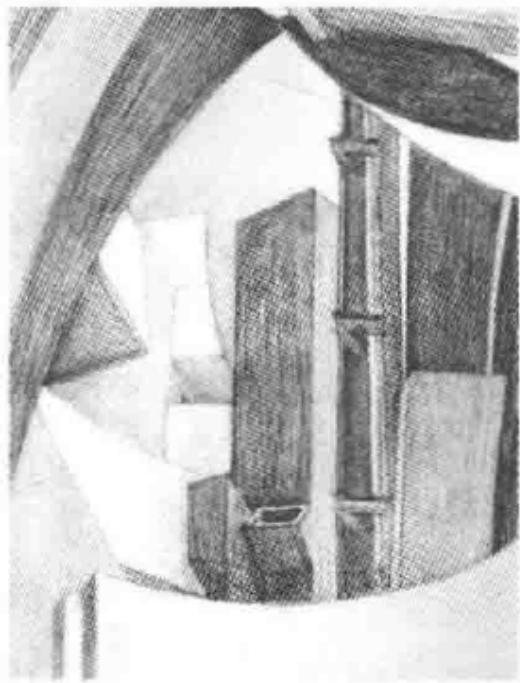
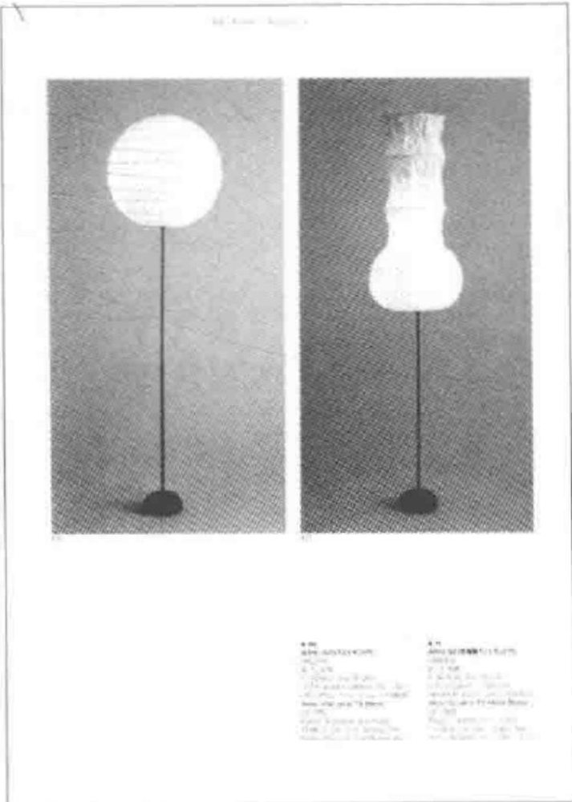
Study cues
- Which forms that later became common are part of the book's "Bauhaus ideal"? Why are the teachers' movements after 1933 written into this history?
- If the Disney Concert Hall and an apartment block used the same curling metal, how would the book's judgement differ? What practice in layout corresponds to honesty of materials?
世界現代設計史
Author: Wang Shouzhi
Scope. This is Wang Shouzhi's revision of his own 《世界現代設計史》. The old edition grew from a manuscript of about thirty years earlier; it was published in 1993 by Guangdong New Century Publishing House and again in 1999 by China Youth Publishing House, and was written in a linear way that moves forward stage by stage. This edition narrows the main thread to industrial product design, cuts architecture and graphics because they now have their own books, and adds digital media, the internet and twenty-first-century studios.
Main ideas
- The book was once framed as 《世界工業設計史》. Early industrial products were often designed by architects; Le Corbusier and Mies both designed furniture, so the old edition added architecture and graphics. Now that separate books exist, this one cuts those two long histories heavily.
- Chapter 1 deals with definitions, process, design philosophy, principles, purpose and what good design is, and then with categories. Chapter 2 covers Europe before the Industrial Revolution. Later chapters cover postmodernism, contemporary car design and brief design histories of different countries.
- The revision targets statements in the first edition that were too absolute, including the linear idea that "each new wave pushes the last one forward". The orderly structure of a general history is kept because it is easy to grasp, but the content is reorganised for new technical conditions, and errors in names, terms and theory are corrected.
- Products and commercial images still meet. One example is the 1927 advertisement by the Italian designer Plinio Codognato for the Panizza hat company, which shows that a bowler hat suits every man.
- Studios also have generations. After Robert Brownjohn left BCG, the firm was renamed Chermayeff & Geismar, and in 2007 younger graphic designers joined. The timeline therefore runs up to contemporary firms, not just to the end of a movement.
Methods
- Use this edition for a product timeline; use 《世界現代建築史》 for the long history of architecture and 《世界平面設計史》 for the long history of graphics.
- For each period, use the categories from Chapter 1: which type of design it belongs to, which step of the process has been reached, and which criterion of good design is at work.
- When writing a rationale for the twenty-first century, first write which step digital media and the internet changed (research, drawing, manufacturing or sales), then write about form.
- Turn the car chapter and the national histories into a comparison table: in the same decade, what problem did an American studio and a European car maker each solve?
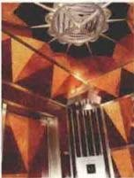
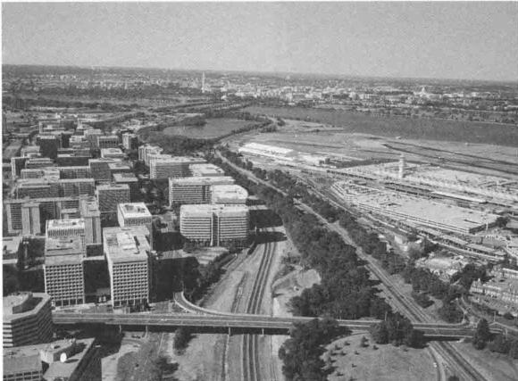
Study cues
- Why does this edition cut architecture and graphics so heavily? Which two architects' furniture is product design still linked to?
- Which column of the timeline suits Codognato's hat advertisement and the renaming of Chermayeff & Geismar: style, commission, or studio?
中國
Scope. These are exam-answer notes on the history of Chinese art. They run from prehistoric painted pottery and the pre-Qin period, through Qin and Han silk paintings, pictorial bricks and bronze mirrors, to Dunhuang and the four great cave temples, landscape painting of the Five Dynasties and early Song, and on to modern painters. Use them to organise a timeline of Chinese art through objects and caves, and to give your design rationale a tradition of images that can be checked.
Main ideas
- Prehistory is evidenced by objects. The notes name the painted pottery basin with a human-face and fish design from Banpo in Xi'an, Shaanxi, and the painted pottery urn with a stork, fish and stone axe, and place lacquer painting within the prehistoric and pre-Qin framework.
- The T-shaped silk painting from Mawangdui is divided into heaven, the human world and the underworld; its theme is guiding the soul up to heaven. It was painted with a light ink underdrawing, then colour, then ink outlines, and its mineral colours are bright and thick. Pictorial bricks moved from decorating palace foundations to tombs; in the Eastern Han they often show chariots, banquets, production and trade. Bronze mirrors changed their patterns across the Western Han, Wang Mang and Eastern Han periods.
- Remember the four great cave temples by their roles: the Mogao Caves at Dunhuang are famous for murals, while Maijishan, Yungang and Longmen are famous for Buddhist sculpture. At Maijishan the stone is loose and crumbly, so the sculptures are mainly clay, and the Northern Dynasties figures are its finest work.
- In the Tang dynasty, the Mogao Caves changed from the Northern Dynasties in that sutra illustrations became the main type, especially the Western Pure Land, the Medicine Buddha and Vimalakirti; painted sculpture and murals were combined into one whole; figures took on a worldly look ("bodhisattvas like palace maidens"); and the "Wu style" and "Zhou style" became the new models for Daoist and Buddhist figures.
- The scroll painting thread runs from Xie He's Six Principles to Jing Hao's ideal of "spirit and substance both in full", Guan Tong's 《關山行旅圖》, and then to the modern painters Huang Binhong, Zhang Daqian and Pan Tianshou, and the founders of the Lingnan School, the "Two Jus" (Ju Chao and Ju Lian).
Methods
- Build the timeline by material and patron: painted pottery, silk, tomb bricks, clay sculpture and cave temples, landscape on paper. For each stop, write whether the patron was a tomb, a temple, the court, or a scholar painting for his own pleasure.
- When memorising the cave temples, use one sentence of difference: Dunhuang for murals, Maijishan, Yungang and Longmen for sculpture; for Maijishan add "the stone is loose, so clay".
- If your design rationale borrows Chinese imagery, name the specific work and its function, such as guiding the soul to heaven, sutra illustration, or the spirit and form of landscape, and then say whether you are borrowing the composition, the material or the symbolism.
- Use the Tang "bodhisattvas like palace maidens" to discuss how a foreign religious image was changed into the bodies and clothes of people at the time. In contemporary design, ask the same question: "whose body?"
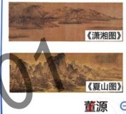
Study cues
- What is painted in each of the three sections of the Mawangdui T-shaped silk painting? What is its theme?
- Of the four great cave temples, which is famous for murals, and which switched to clay sculpture because of its stone? What did people long for, as shown by the sutra illustrations in the Tang Mogao Caves?
外國
Scope. These are notes on the history of foreign (mainly Western) art. They run from barbarian art, Carolingian and Ottonian art, through Byzantine, Romanesque and Gothic, into Renaissance architecture, sculpture and painting, and on to the seventeenth and eighteenth centuries. Use them to memorise the Middle Ages to the Baroque as "a definition, a building, a painting", then fill in the images from 《藝術簡史》.
Main ideas
- The surviving barbarian works are mainly crafts, remembered for bright colours and abstract patterns. Carolingian art was Charlemagne's revival of Roman forms centred on his court at Aachen; its manuscripts include the 《查理曼福音書》. Ottonian painted wooden carvings show the Crucifixion directly, with the body stretched long so that viewers feel the pain.
- Byzantine art was centred on Constantinople. Hagia Sophia joins half-domes layer upon layer, has a tall interior, and is lined with mosaics. For painting, remember 《查士丁尼皇帝和隨從》 and 《皇后提奧多拉和侍從》 in San Vitale, Ravenna.
- Romanesque grew out of the basilica and later changed to stone construction, with thick walls, small windows and dark interiors; examples are Saint-Sernin in France, Durham in England and Pisa in Italy. "Gothic" was a name later scholars gave to art from the twelfth and thirteenth centuries onwards. It began around Paris in the 1140s and used rib vaults, pointed arches and flying buttresses to achieve height, points and verticality. Notre-Dame de Paris, Chartres, Cologne and Milan are typical, and stained glass was the ideal decoration.
- The Renaissance notes link artists through their works: Giotto; Brunelleschi with Florence Cathedral and the Pazzi Chapel; the 《加塔梅拉塔》; Botticelli; Leonardo da Vinci's 《巖間聖母》 and 《蒙娜·麗莎》; Michelangelo's Sistine Chapel ceiling and 《最後的審判》; Raphael's 《雅典學院》 and 《西斯廷聖母》; the Venetian School; and, in the north, the 《根特祭壇畫》. The notes connect the revival to classical norms and to the humanist ideas of the rising middle class.
- The seventeenth century is represented by Velázquez: his figures are true to life and reveal the inner person, and both people and landscapes carry Spanish character.
Methods
- Turn the Middle Ages into a five-part table: Early Christian, barbarian and Carolingian, Byzantine, Romanesque, Gothic. Keep only one building and one structural word (dome, thick wall, flying buttress) for each part.
- Write a design rationale for Gothic in terms of structure: rib vaults carry the weight to the flying buttresses, so the walls can open up for large windows, and stained glass can become the main decoration.
- For each Renaissance work, note one contribution: Brunelleschi's dome, Raphael's group space, Michelangelo's bodies.
- When reading alongside 《藝術簡史》, use these notes as an outline and fill in the evidence with that book's images and boxes.
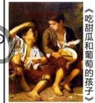
Study cues
- Which structural feature helps you remember Romanesque, and which Gothic? Which structure do the stained-glass windows of Notre-Dame de Paris depend on to be so large?
- From the Renaissance list, choose one building, one fresco and one altarpiece, and write the artist and the spatial or narrative problem each one solves.
工業設計史（第四版）
Author: He Renke
Scope. He Renke traces industrial design from craft before the Industrial Revolution to the twenty-first century, and lists movements, regions, dates and key figures in one table. The three periods are: preparation, from the second half of the eighteenth century to the early twentieth; formation and spread, between the two world wars; and, after the Second World War, integration with production and technology and a move towards diversity. Use it as the master timeline for industrial design.
Main ideas
- After the Second World War, American methods influenced Europe, the Soviet Union and Japan. Japan moved from imitation in the early post-war years to an industrial design with its own character. Russel Wright lectured in Taiwan in 1956, which the book presents as a boost to the competitiveness of Taiwanese products. China began to take industrial design seriously in the late 1970s and founded its Industrial Design Association in 1987.
- The first period was a clash of old and new ideas, in which design reform took craft design over into industrial design. In the second period there was already systematic theory, which spread worldwide. In the third, achievements and currents of thought existed side by side, and a pluralist pattern formed after the 1960s.
- The order in the table includes Neoclassicism, Eclecticism, Arts and Crafts (Morris, C. R. Ashbee), Art Nouveau (Hector Guimard, Gaudí), the Vienna Secession, the Deutscher Werkbund (Hermann Muthesius, Behrens), De Stijl, Constructivism, the Bauhaus (Gropius), Art Deco, Streamlining (Raymond Loewy, Norman Bel Geddes), Scandinavian design, Modernism, American commercial design, Organic Modernism, Rationalism, High-Tech, Pop, Postmodernism and Deconstruction.
- Green design dates from about 1970 and sustainable design from about 1980, with Ezio Manzini named as a key figure. In the twenty-first century, the spread of the internet and of sustainable thinking is described as a turning point, and Apple's iPhone is used to mark a stage led by service design.
- The chapter on the period before the Industrial Revolution stresses that many principles are older than industrial society. The craft of ancient makers is still a source of cultural identity today, and each new generation still needs to learn from this heritage.
Methods
- When memorising the table, note only the region, start and end dates and one person for each movement. In your design rationale, pick one movement from the table, write which of its ideas you inherit, and say which period's logic you are working within.
- When writing a historical note on a Chinese product, use the 1987 association and the twenty-first-century positioning of "Chinese design", then write which principle traditional craft has left behind.
- If your project uses "green" or "sustainable", note which term you mean, according to the approximate dates in the table.
- Use the chapter on the period before the Industrial Revolution to find cultural identity: first write how an ancient object was used, then decide which part of that a modern product keeps.
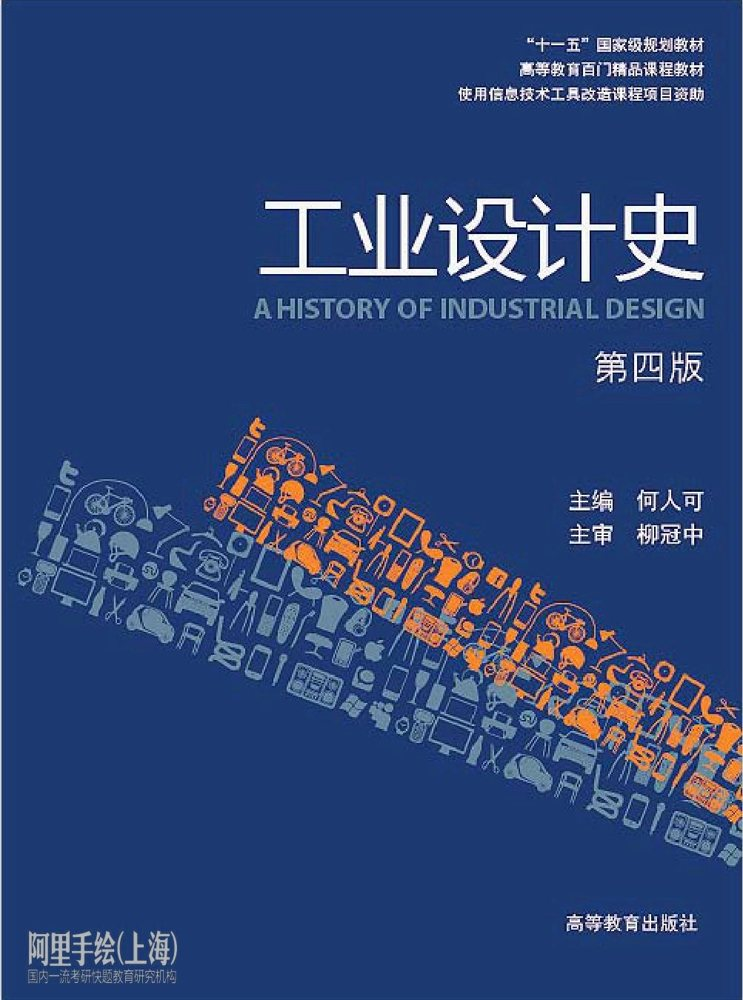
Study cues
- Which events divide the three periods of industrial design? Which new stage does the 4th edition use the iPhone to mark?
- From the table, pick one name and approximate date each for Arts and Crafts, the Bauhaus, Streamlining and sustainability. How are the start dates of green design and sustainable design told apart?
現代設計百科全書：平面設計的歷史、語言及經典應用
Original title: Graphic Design, Referenced: A Visual Guide to the Language, Applications, and History of Graphic Design
Scope. This is a graphic design reference book, arranged by design principles, related knowledge, designers and firms, and classic works, with historical and contemporary images kept separate. It collects a large number of entries and pictures, and is best used to check people, firms and works once your timeline is already clear.
Main ideas
- The reader's guide asks you to use the structure, main text, further reading, bibliography, historical images, contemporary images and entries together. You use it by looking things up, which is a different way of reading history from a single-line narrative.
- Principles, knowledge, key people and firms, and classic works are divided into separate blocks, each with its own page numbering, so you can jump from a principle to a work.
- The entries put the client, designer, firm and year together. Examples include the 2008 launch material for PlayStation 3, Rob Brierley of RGB design studio, and a 2007 design by LoveCreative in the UK.
- The classic logo entry uses Milton Glaser's 1975 work as an example: a visual metaphor that was copied and commercialised on a huge scale, with an enormous number of related infringement cases in New York State. Remember the power of an identity together with how much it has been imitated.
- The book's scale is a vast number of entries and pictures. The acknowledgements include graphic design writers such as Steven Heller, so the entries rest on the profession's archive and can be cross-checked with Wang Shouzhi's histories.
Methods
- Every time you place a style on your timeline, pull two entries from this book, one historical image and one contemporary image, and write which principle they share.
- When citing a logo, write the designer, the year and the consequences (imitation, lawsuits, becoming a public symbol). Glaser's 1975 work is the model for this exercise.
- In your design rationale, first use words from the "principles" section, then find a work in the "classic works" section that uses the same principle as a precedent.
- Use the firms and names to check the history of studios, writing about the client, the design firm and the individual designer separately.
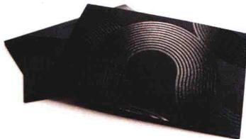
Study cues
- What are the four main blocks of this book? Why should historical and contemporary images be looked at together?
- Glaser's 1975 example asks you to remember which three things together: the designer, the year, and what later happened to the logo?
藝術的真相：通往藝術之路
Original title: Gateways to Art: Understanding the Visual Arts
Scope. This textbook looks at art through four paths: fundamentals, media and processes, history and context, and themes. The history part runs from the ancient world through Asia, the Americas, Africa and the Pacific, the Renaissance and Baroque, Europe and America from 1700 to 1900, to global art of the twentieth and twenty-first centuries. Landmark works such as the pyramids, the Olmec colossal heads, Raphael's 《雅典學院》, and works by Gentileschi and Goya appear again and again in different chapters.
Main ideas
- History and context runs as several parallel threads: after the three great religions of the Middle Ages come China, India and Japan, including calligraphy, painting and poetry, and the Japonisme that ukiyo-e prints sparked among French artists; then South, Central and North America, African architecture and the Pacific islands.
- The section on the Americas stresses handmade ceramics and coiling: the lines of the clay coils are described as the basis of the work. Zapotec calendar dates appear on objects, so writing, time and object share the same thing. The Olmec colossal heads are treated as portraits of powerful rulers.
- The Renaissance and Baroque section uses "Gateway to Art" features to link Raphael's 《雅典學院》, Pieter Bruegel the Elder, Gentileschi's 《朱迪斯殺死荷洛孚尼》 and Caravaggio's influence. After 1700 the order is Rococo, Neoclassicism, Romanticism, Realism, Impressionism, Post-Impressionism and Symbolism, and Art Nouveau.
- The twentieth and twenty-first centuries cover Expressionism, Dada, Surrealism, the influence of Cubism, Abstract Expressionism, Pop, Minimalism, Conceptual art, and postmodern identity and cultural diversity. Matisse's paper cut-out 《伊卡洛斯》 is treated as a landmark case of medium.
- The themes part asks new questions of the same works: community and ritual, the gods, life and death, the cosmos, illusion, portraits of rulers, perspectives on war, and social protest. Goya's 《1808 年 5 月 3 日夜的槍殺》 is used to compare different views of a battle; Dorothea Lange's 《移民母親》 is used to discuss the ethics of documentary photography. Martín Ramírez's 《無題》 from the 1950s is placed within his cultural background and imaginary world.
Methods
- Choose one landmark work and write four sentences, one for each path: a formal principle, the medium, the historical context, and a theme.
- For every hundred years on your timeline, add a column of material from outside Europe, such as Chinese painting and calligraphy, Japanese ukiyo-e, Olmec art or African architecture.
- If your design rationale involves images of war, poverty or power, use the Goya or Lange sections to state the point of view, and write about the ethics of documentary images.
- For a media exercise, limit yourself to one process: coiling, paper cut-out or collage. Write how that process determines the shape; Ramírez's collage and Matisse's cut-outs are two precedents.
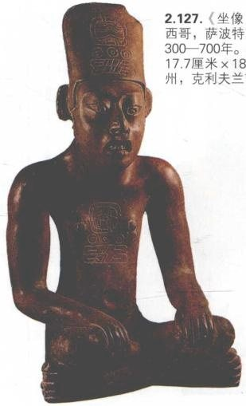
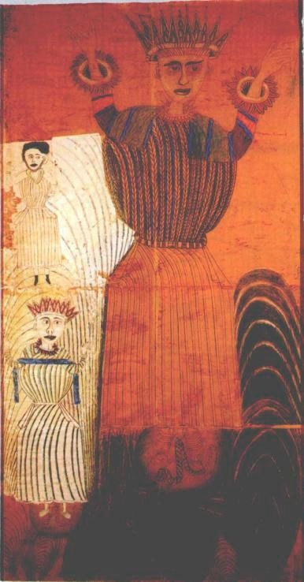
Study cues
- What are the four paths? Choose Raphael's 《雅典學院》 or Goya's 《5 月 3 日》, and write two sentences using two of the paths.
- What do coiling and Ramírez's collage each make the material do? Which kind of ethics does the documentary photography section use Lange's work to make you think about?
藝術與物理學：時空和光的藝術觀與物理觀
Original title: Art & Physics: Parallel Visions in Space, Time, and Light
Scope. This book treats visual art and physics as two ways of organising nature. Physics takes nature apart and then looks at the relationships; art often brings different aspects together. The chapters run from classical idealism, the sacred and the profane, and conic sections and elliptical orbits, to Einstein's space-time and light, and then pair Fauvism with light, Cubism with space, Futurism with time and Surrealism with distortion.
Main ideas
- The author singles out physics because, in his argument, twentieth-century chemistry, astronomy and biology are all anchored in force, matter and atoms. On the art side, he argues that truly fundamental visual innovations come before language and create concepts for which there are not yet words.
- The example of a baby recognising a bottle explains his method: several viewpoints are first combined into a shape, and once language arrives, the word pushes the image aside. Abstract thought depends on words, and naming something is the start of controlling it. The work of art is often to pull people back to the image. Zola described art as nature seen through a particular temperament; in Greek, physics simply means nature.
- The historical pairings include classical art and idealism, religious painting and the profane, conic sections and elliptical orbits, the rational and the irrational, and Newton's apple and Cézanne's apples. East and West, and primitive art and non-Euclidean space, each have a chapter.
- The four chapters on modern art are the book's core comparison: Fauvism deals with light, Cubism with space, Futurism with time, and Surrealism with relativistic distortion. Abstract art is matched with a physics that has no pictures.
- Time can be painted as frozen. The goat in a pattern made of initials is the opposite and the complement of bonsai and the 《草畫》; to borrow Magritte's phrase, that goat is "time transfixed".
Methods
- Make a comparison table: physical concepts (light, space, time, gravity) in the left column, and one art movement and one work in the right. Match each concept to only one chapter of the book.
- If your design rationale uses "space-time", "speed" or "transparency", first write whether you mean Futurist time, Cubist space, or the transparency of the material itself.
- When analysing a logo or pattern, say whether it freezes time or shows change. The goat and the bonsai are examples of these two answers.
- When reading an abstract work, describe the shapes first and make verbal judgements afterwards. The book argues that words replace images, so the order must be image first, words second.
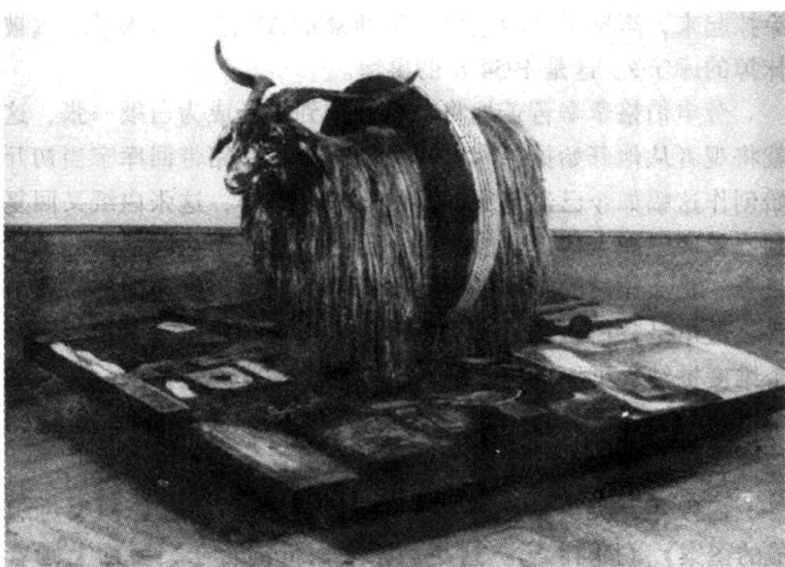
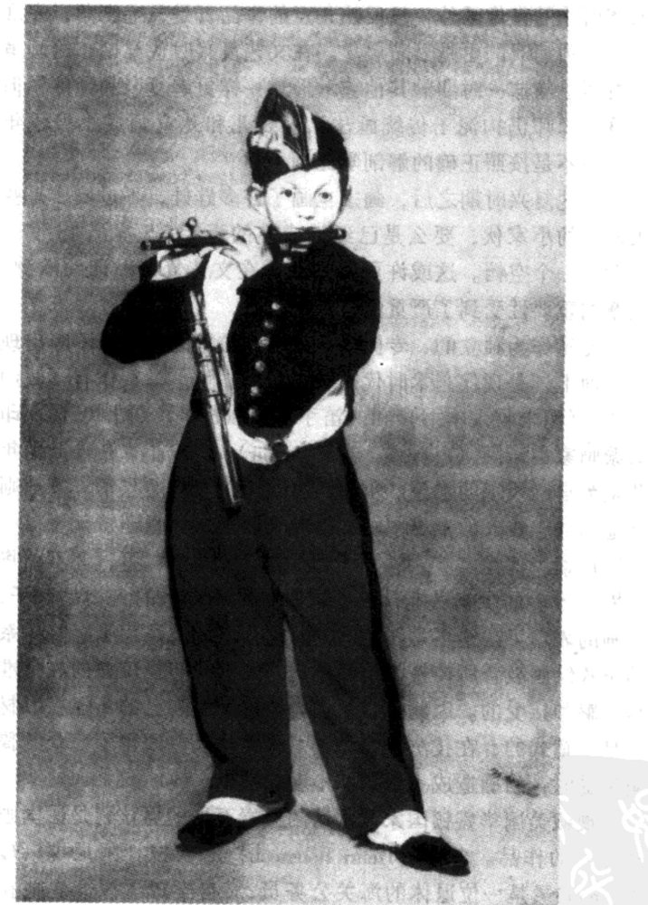
Study cues
- Which physical concept is each of Fauvism, Cubism, Futurism and Surrealism matched with in this book?
- Use the example of the baby recognising a bottle to explain which comes first, the image or the word. What does this require of the order in which you describe an abstract work?
設計藝術史
Author: Zhou Rui
Scope. This textbook, edited by Zhou Rui with Fan Shengxi and Wu Duan, traces art and design from the early West, the classical world and the periods before and after the Industrial Revolution, to traditional Chinese crafts, the Ming and Qing dynasties, the arrival of Western design culture in China, and Japan and other Eastern countries, and then on to the Arts and Crafts movement, Art Nouveau and contemporary design. It suits a course that needs a timeline of both Western origins and Eastern crafts.
Main ideas
- The prehistoric section treats art and design as not yet separate. The Venus of Willendorf from Austria is read as an inner vision shared by a community; nomadic figurines were small and portable, while after farming and settlement Egyptian statues became huge. The square pyramids at Giza are linked to an understanding of mountains, and both the slope and the moving of the stones matured only after failures.
- Designers and makers later became separate. A Mesopotamian statue is used to show a ruler reviewing a plan: the intention is drawn first, then built. Neolithic pottery is a vehicle designed for both function and appearance, and ritual vessels took more time than everyday ware. The geometric style and the red-figure and black-figure techniques of Greek pottery are later examples on this line.
- The periods before and after the Industrial Revolution get their own sections on social conditions, the influence of design on industry, and graphic design in Europe and America. Later, modern philosophical currents lead into the Arts and Crafts movement and Art Nouveau, with a separate section on French Art Nouveau.
- The China chapter runs from traditional crafts to the Ming and Qing, marks Ming furniture as an important part of material culture, and then covers the influence of Western design culture in the modern period. Japan and other Eastern countries have a section of their own.
- Contemporary examples include the company founded in 1993 by Renny Ramakers and Gijs Bakker, and Tejo Remy's chest of drawers. A section on glassware lists wheel engraving, acid etching, metal inlay and glassblowing, which make the flower, plant and insect patterns possible.
Methods
- Split the timeline into two parallel lines: West (early, classical, Industrial Revolution, Arts and Crafts, Art Nouveau, contemporary studios) and East (Chinese crafts and the Ming and Qing, foreign influence in the modern period, Japan and others). Write where they meet in the modern-period section.
- When analysing an ancient work, write three roles: who holds the inner vision, who reviews the plan, and who builds it. Use the pyramids and the Mesopotamian statue to practise when these three roles separate.
- When your design rationale is about craft, list the techniques first, then write about the pattern. The engraving, etching, inlay and blowing on the glassware page are the model.
- Use Remy's chest of drawers to practise writing about a contemporary company: first write 1993 and the two founders, then how this piece of furniture reorganises ready-made objects.
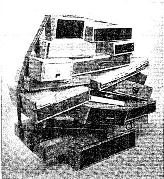
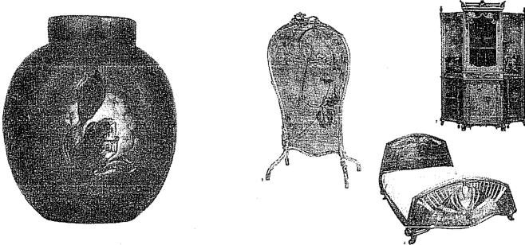
Study cues
- What ways of life do the Venus of Willendorf and the Egyptian pyramids show, in terms of "portable" and "huge"? What does the plan in the Mesopotamian statue show the designer had already done?
- Which line in the book's contents do Ming furniture, Japan and other Eastern countries, and the 1993 design company each belong to?
重要的不是藝術
Scope. This is a collection of essays by Li Xianting, divided into "Tradition and the Contemporary", "Contemporary Problems" and "Contemporary Currents of Thought". It opens with the abstract aesthetics of Chinese landscape and bird-and-flower painting, and goes on to discuss the concept of "Chinese painting", modern calligraphy, forms of display, the May Fourth revolution in art and the Mao Zedong-era model of art. Use it to write a history of the problems of modern and contemporary Chinese art.
Main ideas
- From the Tang and Song onwards, literati painting used symbolic subjects such as bamboo, flowers and birds to create a mood different from Western painting. Aesthetic perception is the first impression an object leaves, already processed by the mind; aesthetic emotion is feeling that has built up in life and bursts out only when it meets a form, becoming formalised in the work.
- "Mi-dot landscape" is more concentrated than real scenery, and Mi Youren's 《瀟湘奇觀圖》 is used to show its indescribable flavour. The "method of forgetting" in painting means seizing the features that best match the feeling, so that the motif becomes clear. In this essay, natural beauty is described as the outward expression of the artist's feeling.
- "Expressing one's ideals through objects" appears widely in Song and Yuan landscape and bird-and-flower painting, and the idea goes back to the pre-Qin period: Confucius's "the wise delight in water, the virtuous delight in mountains", and the gentleman comparing his virtue to water; Zhuangzi's "the ten thousand things and I are one"; the scenery of 《詩經》 and 《楚辭》, soaked in human feeling; and Liu Xie's bi and xing (comparison and evocation), which set out this method clearly.
- The contemporary problems include: pure abstraction described as a logical development of ink painting; an essay arguing that the concept of "Chinese painting" should be abandoned; and a challenge to "modern calligraphy", discussing the place of character forms in the history of calligraphy and how forms of display forced ink painting to change.
- The "May Fourth revolution in art" and the "Mao Zedong model of art" sit within the same set of concerns in this book: how a traditional visual vocabulary was rewritten by the revolutions and institutions of the twentieth century. The title shifts the question from "is it art?" to the history in which art stands.
Methods
- Order your timeline by problems: comparing virtue and comparison-and-evocation, the symbols of literati painting, the May Fourth reform of art, the model of art under the institutional era, and the contemporary debate over the term "Chinese painting".
- When analysing an ink painting, write on two levels: which already-transformed feature this brushstroke seizes, and which built-up emotion it matches.
- If your design rationale uses bamboo, lotus or landscape, name the specific virtue it stands for, then decide whether the contemporary work keeps this symbol or breaks it.
- When discussing a brand with a "Chinese style", first read the section "The concept of Chinese painting should be abandoned", then write whether you are keeping the material, the way of display, or a national name.
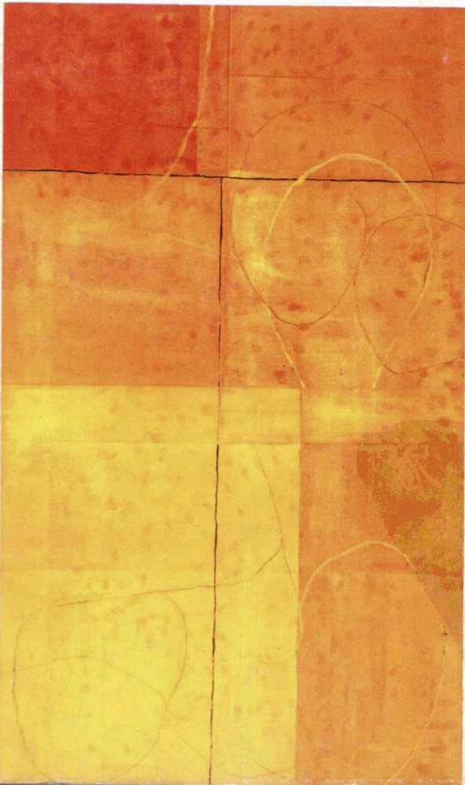
Study cues
- What do aesthetic perception and aesthetic emotion each mean in this essay? Why is "Mi-dot landscape" said to be more concentrated than real scenery?
- Which problem on the timeline do Confucius's comparison of virtue with mountains and water, and "the concept of Chinese painting should be abandoned", each belong to?
錢君匋的藝術世界
Scope. This is a collection of essays on Qian Juntao, covering his book design, book covers, seal carving, poetry and prose, and Chinese painting. It runs from his covers of the 1920s, such as 《春日》 (1928), to the late 《書衣集》 collection, paintings and seals, passing through seal inscriptions from the War of Resistance against Japan and the return of his collection after the Cultural Revolution. Use it to place an individual case centred on book design and seal carving on the timeline of modern Chinese graphic design.
Main ideas
- His book designs were known as "Qian covers" and combined many arts. The collection divides his book design into periods and discusses specific covers, such as the essay collection 《春日》 (1928) and the cover of 《書衣集》 (1987). He also published a book on art, 《西洋藝術史話》.
- Feng Zikai led him into Chinese painting, and along the way he drew close to the Eight Eccentrics of Yangzhou, Chen Chun (Baiyang), Xu Wei (Qingteng), Shitao, Bada Shanren and Wu Changshuo. His late paintings are described as rich in brushwork, simple in colour and full of energy, and Zhu Qizhan especially admired his painting. The works named include 《墨荷》, 《老梅綻紅花》, 《蒼松》 and 《芭蕉竹石》.
- His cultivation is summed up as seeking painting beyond painting, calligraphy beyond calligraphy, and seals beyond seals. When he was young, Feng Zikai pointed out a wrongly written character, and he responded by reading the whole dictionary; in 1929, aged twenty-three, he published the volume of new poetry 《水晶座》. From middle age onwards, his classical-style poems inscribed on paintings were collected in 《冰壺韻墨》.
- His seal carving cut his life story into seals: from the War of Resistance come 《戰火逼我廬》, 《雪行三省到珠江》 and 《廣州三月作書賈》; after the Cultural Revolution comes 《與君一別十三年》. In 1973 he carved seals for Zhu Qizhan and Wang Jimei; Zhu Qizhan was eighty-one that year.
- During the Cultural Revolution, the name of his studio was falsely cited as evidence of political ambition. His covers and seal inscriptions are therefore both samples of style and records of a life, and personal words can be drawn into a political reading.
Methods
- Use covers and seal inscriptions as dates on your timeline: 《春日》 in 1928, 《水晶座》 in 1929, the wartime seal inscriptions, the 1973 seals, and 《書衣集》 in 1987. For each, write who commissioned it or who the seal was for.
- When analysing a cover, write separately about the lettering, the image and the literary meaning of the title. The value of this book is that all three appear in one person's work.
- If your design rationale is about modern Chinese books, use "Qian covers" to show that book design can build a recognisable personal method, then write whether your cover is recognised by its lettering, its image or its title.
- Use the seal-carving pages to practise working within a limit: how a stretch of life is compressed into very few characters. The number of characters is itself a design condition.
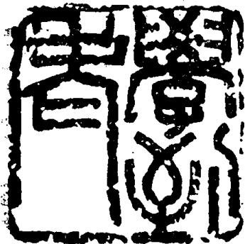
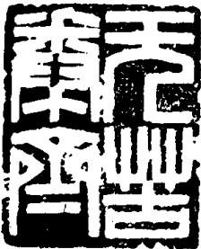
Study cues
- For "Qian covers", which two covers' dates should you remember at least? Why can seal carving also go on the same timeline?
- Who were the 1973 seals carved for? What does the fate of his studio name in the Cultural Revolution show about how personal words can also be read?